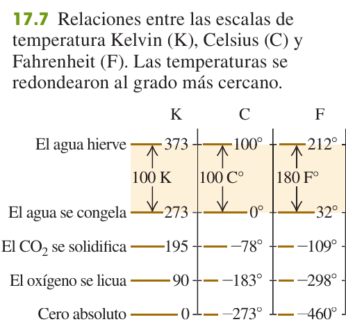
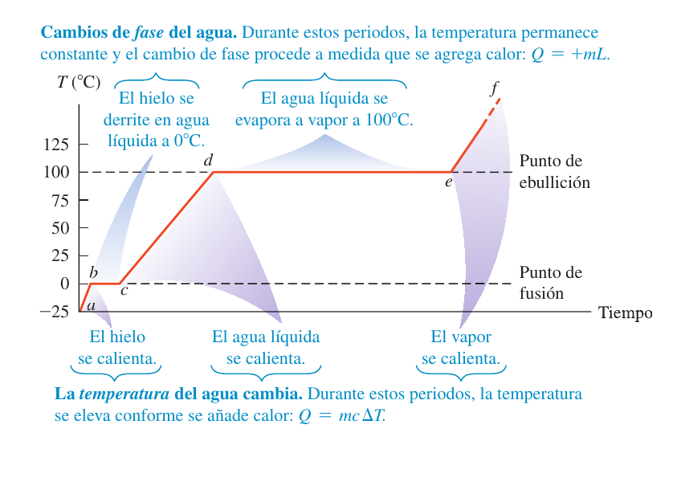
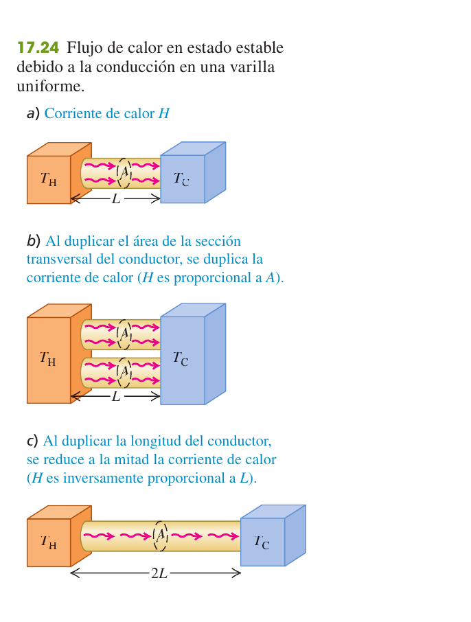

Temperatura y calor
Qué es la temperatura y cómo se mide, cuánto se dilatan los cuerpos al calentarse, cuánta energía hace falta para calentar, fundir o hervir algo (calor, calorimetría) y de qué tres maneras viaja el calor de un sitio a otro (conducción, convección y radiación). Esta última parte es la pregunta de teoría que ha caído en examen.
El tema en 5 minutos P
Una sola idea: la temperatura dice «lo caliente que está» un cuerpo y el calor es la energía que pasa de un cuerpo a otro solo porque sus temperaturas son distintas, hasta que se igualan (equilibrio térmico, ley cero). Con esa idea se responde a cuatro preguntas: ¿cuánto se dilata algo al calentarlo ($\Delta L=\alpha L_0\Delta T$)? ¿cuánta energía hace falta para calentarlo ($Q=mc\Delta T$) o para fundirlo o hervirlo ($Q=mL$)? ¿a qué temperatura acaba una mezcla ($\sum Q=0$)? y ¿a qué ritmo viaja el calor por conducción, convección y radiación ($H$, en watts)? La última es la que ha caído en examen, como pregunta de teoría.
Necesitas: energía y potencia (temas 6-7: $1\ \text{W}=1\ \text{J/s}$, $K=\tfrac12mv^2$); esfuerzo y módulo de Young $Y$ (tema 11) para el esfuerzo térmico; áreas y volúmenes de círculo y esfera; despejar en ecuaciones lineales.
El método en 4 pasos (úsalo siempre, en este orden)
Es el planteamiento de las tres estrategias para resolver problemas del capítulo 17 del libro (expansión térmica, calorimetría y conducción: identificar, plantear, ejecutar, evaluar). U p.553, 563, 566
Las 6 fórmulas que hay que saber
| Fórmula | Cuándo se usa |
|---|---|
| $T_K=T_C+273{,}15$, $\ T_F=\tfrac95T_C+32^\circ$; intervalos: $1\ \text{K}=1\ \text{C}^\circ=1{,}8\ \text{F}^\circ$ | «exprese en kelvin / Fahrenheit», «¿a qué temperatura coinciden?», «un cambio de … grados». |
| $\Delta L=\alpha L_0\Delta T$, $\ \Delta V=\beta V_0\Delta T$ ($\beta=3\alpha$); $\ \dfrac FA=-Y\alpha\Delta T$ | «¿cuánto se alarga?», «remache», «se derrama del frasco», «juntas de dilatación», «barra sujeta entre paredes». |
| $Q=mc\Delta T$ $\ $($\Delta T=T_f-T_i$) | «¿cuánto calor para calentar…?», «resistencia de 200 W: ¿cuánto tarda?», «el martillo calienta el clavo». |
| $Q=\pm mL$ $\ $($L_f$ fusión, $L_v$ vaporización); $\ \sum Q=0$ | «hielo a −10 °C hasta vapor», «se mezcla…, ¿temperatura final?», «¿se funde todo el hielo?», «calor específico de un metal». |
| $H=kA\dfrac{T_H-T_C}{L}$; $\ R=\dfrac Lk$, $\ H=\dfrac{A\,\Delta T}{\sum R}$ | «varilla entre agua hirviendo y hielo», «temperatura de la unión», «pared de dos capas», «doble acristalamiento», «unión en Y». |
| $H=Ae\sigma T^4$; $\ H_\text{neta}=Ae\sigma(T^4-T_s^4)$, $T$ en K | «potencia radiada», «pérdida neta con el entorno a 20 °C», «emisividad», «¿qué potencia mantiene la esfera a …?». |
Qué cae en examen
En las convocatorias catalogadas (2018-2025) el tema 17 ha salido tres veces, y las tres como pregunta de teoría con el mismo título: «Mecanismos de transferencia de calor», más dos cuestiones cortas (Febrero 2022, 2024 y 2025, las tres de 2ª semana). No ha caído ningún problema numérico de este tema. Solo se puede leer el texto completo de la de Febrero 2025 (X1, resuelta entera en el bloque de teoría); de las otras dos solo consta el resumen del índice de exámenes, y no se inventa su enunciado. X Sus cuestiones cortas han tocado la conducción (clavo en la patata, metal y madera a igual temperatura), la dilatación del agua al congelarse, el enfriamiento por evaporación y la radiación. Los problemas del libro sirven para dominar esas leyes con números (y para las PEC).
Elige tu ruta
Esta página + §7 completo (🔴, es lo que cae) + X1 entera + del Núcleo 17.57, 17.59, 17.102, 17.63 y 17.67 + las cajas 🔴 de §2, §4, §5 y §6.
Todo lo anterior + §1 y §3 (🟡) + el resto del Núcleo (escalas, dilatación, calorimetría) + bloque «Práctica» con el problema práctico.
Chuleta, errores frecuentes, lista de comprobación; escribe «Mecanismos de transferencia de calor» en una cara en 25 minutos y compáralo con el desarrollo modelo de X1.
¿?¿Qué tipo de problema es? 🔴 P
Lee el enunciado, busca la pista en la primera columna y ve directo al método y al ejercicio modelo.
| Si el enunciado dice… | Haz esto | Ejercicio modelo |
|---|---|---|
| «exprese en °F / K», «¿a qué temperatura marcan lo mismo?», «sube 10 grados» | Valores: fórmula con $+32$ o $+273{,}15$. Coinciden: iguala $T_F=T_C=T$ y despeja. Intervalos: solo el factor 1,8. | 17.4 |
| «termómetro de gas a volumen constante», «¿temperatura del cero absoluto?» | Recta $p(T)$ por dos puntos y corte con $p=0$; cocientes $p_2/p_1=T_2/T_1$ solo en kelvin. | 17.9 |
| «remache», «diámetro de un orificio», «cinta métrica», «¿cuánto se alarga?» | $L=L_0(1+\alpha\Delta T)$ con $L_0$ el valor conocido; un orificio se dilata como el material. | 17.14 |
| «frasco lleno hasta el borde… se derrama» | Se dilatan líquido y recipiente: derrame $=(\beta_\text{líq}-\beta_\text{rec})V_0\Delta T$. | 17.17 |
| «¿qué hueco dejar?», «si se colocan en contacto, ¿qué esfuerzo?» | Libre: $\Delta L=\alpha L_0\Delta T$. Impedida: $F/A=-Y\alpha\Delta T$ (no depende de $L_0$). | 17.21 |
| «tetera con agua», «¿cuánto calor para calentar…?» | $Q=(\sum m_ic_i)\Delta T$; no olvides el recipiente. | 17.23 |
| «resistencia de 200 W», «¿cuánto tarda?», «a ritmo constante de … J/min» | $t=Q/P$; cada tramo dura $Q_\text{tramo}/P$ y las mesetas $mL/P$. | 17.24, 17.46 |
| «el 60 % de la energía cinética del martillo se convierte en calor» | $Q=(\text{fracción})\,\Delta E_\text{mec}$ y luego $\Delta T=Q/(mc)$. | 17.31 |
| «se deja caer en agua…, la temperatura llega a…: ¿calor específico?» | $\sum m_ic_i(T_f-T_i)=0$, cada $\Delta T$ con su signo, y despeja. | 17.35 |
| «de hielo a −10 °C a vapor a 100 °C» | Escalera: $mc_\text{hielo}\Delta T$ + $mL_f$ + $mc_\text{agua}\Delta T$ + $mL_v$. | 17.45 |
| «se añade hielo / vapor: ¿se funde (condensa) todo?», «calorímetro con hielo» | Compara presupuestos hasta la temperatura de cambio de fase; si no alcanza, $T_f$ es esa y la incógnita es la masa que cambia. | 17.93, 17.97, 17.38 |
| «varilla de cobre entre 100 °C y 0 °C: gradiente, $H$, temperatura a 12 cm» | $H=kA\Delta T/L$; en estado estable $T$ baja en línea recta. | 17.57 |
| «dos (tres) barras / capas unidas extremo con extremo», «pared de madera y espuma», «ventana doble» | Serie: misma $H$; $H/A=\Delta T_\text{total}/\sum(L_i/k_i)$; cada salto $=(H/A)R_i$. | 17.59, 17.56, 17.103, 17.101 |
| «soldadas en forma de Y» | Nudo: $H_\text{entra}=\sum H_\text{salen}$, cada barra con $kA\Delta T/L$. | 17.102 |
| «se evaporan 0,390 kg cada 3 min: ¿temperatura de la base?» | $H=mL/t$ y luego $\Delta T=HL/(kA)$. | 17.63 |
| «emisividad», «alrededores a 20 °C», «¿qué potencia la mantiene a 41 °C?» | Kelvin; $H_\text{neta}=Ae\sigma(T^4-T_s^4)$; a $T$ constante, potencia suministrada $=H_\text{neta}$. | 17.67, 17.108 |
| «extremo ennegrecido expuesto a radiación… el otro en hidrógeno sólido» | Mecanismos en serie: iguala la $H$ de radiación y la de conducción; $dm/dt=H/L$. | problema práctico |
| «Desarrolle el tema: mecanismos de transferencia de calor», «¿por qué…?» | Guion: calor y $H$ → conducción → convección → radiación → cuadro → estado estable. Cada cuestión, con una ley. | Teoría, X1 |
1Temperatura y equilibrio térmico 🟡 U p.546-547
🎯 Antes de leer: tocas una barra de metal y otra de madera que están a la misma temperatura ambiente, y la de metal parece más fría. ¿Tienen distinta temperatura? (Piénsalo 20 s; la respuesta está en esta sección.)
Por el tacto sabemos qué está «caliente» o «frío», pero el tacto engaña (lo verás en §7.1). La temperatura se mide con un termómetro: un objeto con una propiedad que cambia al calentarse (la altura del mercurio, la presión de un gas, la curvatura de una tira de dos metales soldados que se dilatan distinto). Dos sistemas en contacto se influyen hasta que sus propiedades dejan de cambiar: han llegado al equilibrio térmico. Un aislante ideal impide esa interacción.
Ley cero de la termodinámica: si C (el termómetro) está en equilibrio térmico con A y con B, entonces A y B están en equilibrio térmico entre sí. Por eso dos sistemas están en equilibrio térmico si y solo si tienen la misma temperatura, y un termómetro puede «medir» la de otro cuerpo.
Ejemplo mínimo: el termómetro en la boca marca 37 °C cuando deja de subir; antes estás leyendo la temperatura del mercurio, que aún no está en equilibrio contigo. Un termómetro siempre mide su propia temperatura. P
Error típico: confundir temperatura (propiedad del cuerpo, como el nivel de un depósito) con calor (energía en tránsito entre cuerpos a distinta temperatura, como el caudal entre dos depósitos; §5).
U p.546-547✍️ Comprueba que lo has entendido (2 min)
- Metes en agua caliente un termómetro que estaba a 20 °C. A los 2 s marca 35 °C y sigue subiendo. ¿Está el agua a 35 °C?
Ver respuesta
No se sabe todavía: el termómetro mide su propia temperatura y aún no está en equilibrio con el agua. Hay que esperar a que deje de subir. - A y B no se han tocado nunca, pero cada uno está en equilibrio térmico con C. Si los pones en contacto, ¿pasa calor de uno a otro?
Ver respuesta
No: por la ley cero A y B están en equilibrio entre sí, tienen la misma temperatura y no hay flujo neto de calor. - Una tira bimetálica está hecha de latón ($\alpha=2{,}0\times10^{-5}$ K$^{-1}$) y acero ($1{,}2\times10^{-5}$ K$^{-1}$). Al calentarla, ¿qué metal queda en el lado exterior de la curva?
Ver respuesta
El latón: se alarga más que el acero y el lado más largo de una curva es el exterior (convexo).
2Termómetros y escalas de temperatura 🔴 U p.547-549
🎯 Antes de leer: para pasar de °C a K se suma 273,15. Si una temperatura aumenta 10 °C, ¿cuántos kelvin aumenta? (Piénsalo 20 s; la respuesta está en esta sección.)
Una escala es una regla con un cero y un tamaño de grado. Celsius: el agua se congela a 0 °C y hierve a 100 °C (a presión normal). Fahrenheit pone esos puntos en 32 °F y 212 °F: 180 grados en el mismo intervalo, así que su grado es más pequeño (5/9 del Celsius). Kelvin: mismo grado que Celsius, pero con el cero en el cero absoluto (§3).
$$T_F=\tfrac95T_C+32^\circ\ (17.1)\qquad T_C=\tfrac59(T_F-32^\circ)\ (17.2)\qquad T_K=T_C+273{,}15\ (17.3)$$«20 °C» es un valor (un punto de la escala): se convierte con las fórmulas. «10 C°» es un intervalo (una diferencia): solo cuenta el tamaño del grado, $1\ \text{C}^\circ=1\ \text{K}=1{,}8\ \text{F}^\circ$. Por eso en $\Delta T$, $\alpha$, $c$ o $k$ da igual usar °C o K. Se dice «293 kelvins» (293 K), nunca «grados kelvin». Algunos termómetros no tocan el cuerpo: miden la radiación infrarroja que emite (§7.3).
Ejemplo mínimo (ejemplo 17.1 de U): de hielo a 32,00 °F a agua a 98,60 °F. En Celsius, 0,00 °C y 37,00 °C; en kelvin, 273,15 K y 310,15 K. El intervalo es 37,00 C° $=$ 37,00 K $=66{,}60$ F° $=1{,}8\times37{,}00$.
Error típico: aplicar el $+32$ a un intervalo. Un cambio de 10 C° son 18 F°, no 50.
U p.548-550
✍️ Comprueba que lo has entendido (2 min)
- Expresa 25,0 °C en °F y en K.
Ver respuesta
$T_F=\tfrac95(25{,}0)+32=77{,}0$ °F; $T_K=25{,}0+273{,}15=298{,}15$ K. - La temperatura de una habitación sube 15 C°. ¿Cuánto sube en K y en F°?
Ver respuesta
En kelvin, 15 K (mismo tamaño de grado); en Fahrenheit, $1{,}8\times15=$ 27 F°. Sin $+32$ ni $+273{,}15$: es un intervalo. - El papel arde hacia 451 °F. ¿Cuántos °C son?
Ver respuesta
$T_C=\tfrac59(451-32)=233$ °C (232,8 °C).
3Termómetros de gas y la escala Kelvin 🟡 U p.549-550
🎯 Antes de leer: si a volumen constante la presión de un gas es proporcional a la temperatura, ¿qué temperatura corresponde a presión cero? (Piénsalo 20 s; la respuesta está en esta sección.)
Un líquido concreto (mercurio, alcohol) da una escala que depende de la sustancia. Un gas diluido a volumen constante no: sea cual sea el gas, su presión crece en línea recta con la temperatura, y al extrapolar todas las rectas cortan $p=0$ en el mismo punto, $-273{,}15$ °C: el cero absoluto, $0$ K. La escala Kelvin se define con cocientes de presiones:
$$\frac{T_2}{T_1}=\frac{p_2}{p_1}\ (17.4)\qquad T=(273{,}16\ \text{K})\,\frac{p}{p_\text{triple}}\ (17.5)$$El estado de referencia es el punto triple del agua (hielo, agua y vapor juntos: 0,01 °C y 610 Pa), al que se asignan 273,16 K.
Ejemplo mínimo: un termómetro de gas marca $4{,}00\times10^4$ Pa en el punto triple y $5{,}00\times10^4$ Pa en un baño. Con (17.5), $T=(273{,}16)(5{,}00/4{,}00)=341{,}45$ K $=68{,}3$ °C. P
Error típico: usar °C en $T_2/T_1=p_2/p_1$ (el cero de Celsius no es el cero absoluto). Y creer que en el cero absoluto «se para todo»: la energía molecular es la mínima posible, pero no nula.
U p.549-550✍️ Comprueba que lo has entendido (2 min)
- Un termómetro de gas marca $6{,}00\times10^4$ Pa en el punto triple. ¿Qué presión marcará en agua hirviendo a 373,15 K?
Ver respuesta
$p=(6{,}00\times10^4)\dfrac{373{,}15}{273{,}16}=8{,}20\times10^4$ Pa. - Un gas a volumen constante está a 27 °C. ¿A qué temperatura se duplica su presión?
Ver respuesta
Al doble de la temperatura en kelvin: $2(300{,}15\ \text{K})=600{,}3$ K $\approx327$ °C (no 54 °C). - ¿Por qué el cero absoluto no depende del gas que se use en el termómetro?
Ver respuesta
Porque, con gases muy diluidos, todas las rectas $p(T)$ a volumen constante extrapolan a $p=0$ en el mismo punto, $-273{,}15$ °C.
4Expansión térmica 🔴 U p.551-556
🎯 Antes de leer: las vías del tren y los puentes llevan juntas de dilatación. ¿Qué pasaría si no las tuvieran en un día de verano? (Piénsalo 20 s; la respuesta está en esta sección.)
Al calentar un sólido sus átomos vibran más y, como la fuerza entre ellos no es simétrica, se separan algo más en promedio: el objeto se dilata. El cambio relativo de longitud es proporcional al cambio de temperatura:
$$\Delta L=\alpha\,L_0\,\Delta T\ (17.6)\qquad\Longleftrightarrow\qquad L=L_0(1+\alpha\,\Delta T)\ (17.7)$$$\alpha$ es el coeficiente de expansión lineal, en K$^{-1}$ (tabla 17.1): aluminio $2{,}4\times10^{-5}$, latón $2{,}0\times10^{-5}$, cobre $1{,}7\times10^{-5}$, acero $1{,}2\times10^{-5}$, vidrio $0{,}4$-$0{,}9\times10^{-5}$. Vale para cualquier dimensión lineal (longitud, diámetro, lado) y para $\Delta T$ no muy grandes; con 100 C°, $\Delta L/L_0$ es del orden de $10^{-3}$.
Ejemplo mínimo (ejemplo 17.2 de U): una cinta de acero de 50,000 m a 20 °C, a 35 °C se alarga $\Delta L=(1{,}2\times10^{-5})(50{,}000)(15)=9{,}0$ mm y mide 50,009 m. Si con ella lees 35,794 m a 35 °C, la distancia real es $(1+1{,}8\times10^{-4})(35{,}794)=35{,}800$ m.
Error típico: tomar como $L_0$ un valor que no corresponde a $T_0$, o equivocar el signo de $\Delta T=T-T_0$.
U p.551-553Para el volumen, $\Delta V=\beta\,V_0\,\Delta T$ (17.8), con el coeficiente de expansión volumétrica $\beta$ (tabla 17.2: mercurio $18\times10^{-5}$, etanol $75\times10^{-5}$ K$^{-1}$). En un sólido isótropo los tres lados crecen igual ($V=L^3$, $dV=3L^2dL$), de modo que
$$\beta=3\alpha\qquad(17.9)$$Un orificio en una placa se agranda al calentarla, como si fuera del mismo material (piensa en una foto que se amplía). Y la cavidad de un recipiente cambia de volumen como el sólido del recipiente.
Ejemplo mínimo (ejemplo 17.3 de U): un frasco de vidrio de 200 cm³ ($\alpha=0{,}40\times10^{-5}$, $\beta=1{,}2\times10^{-5}$ K$^{-1}$) lleno de mercurio, de 20 a 100 °C. Se derrama la diferencia de dilataciones: $(200)(80)(18-1{,}2)\times10^{-5}=2{,}7$ cm³. Así funciona un termómetro de mercurio.
Error típico: creer que el agujero se encoge, o suponer que el recipiente no se dilata.
U p.552-554Entre 0 y 4 °C el agua se contrae al calentarse; por encima de 4 °C se dilata. Su densidad es máxima a 4 °C. Además se dilata al congelarse: el hielo flota, los lagos se congelan de arriba abajo (el fondo se queda a 4 °C) y las tuberías con agua revientan al helarse.
U p.554
Si una barra está sujeta y no puede cambiar de longitud, aparece un esfuerzo. Se razona como en el tema 11: la barra «querría» deformarse $\alpha\Delta T$; las sujeciones le imponen una deformación $F/(AY)$ igual y contraria; la suma es cero:
$$\boxed{\frac FA=-Y\,\alpha\,\Delta T}\qquad(17.12)$$Si $\Delta T\gt0$ sale negativo: compresión; si $\Delta T\lt0$, tracción. La longitud de la barra no interviene.
Ejemplo mínimo (ejemplo 17.4 de U): un cilindro de aluminio de 20 cm² entre dos paredes rígidas, de 17,2 a 22,3 °C ($Y=7{,}0\times10^{10}$ Pa): $F/A=-(7{,}0\times10^{10})(2{,}4\times10^{-5})(5{,}1)=-8{,}6\times10^6$ Pa y $F=-1{,}7\times10^4$ N. ¡Con solo 5 C°! Por eso hay juntas de dilatación.
Error típico: meter la longitud en el esfuerzo, o calcular $F$ con $\Delta L$ en vez de con el esfuerzo.
U p.554-556
✍️ Comprueba que lo has entendido (2 min)
- Una barra de aluminio de 2,00 m pasa de 20 a 70 °C. ¿Cuánto se alarga?
Ver respuesta
$\Delta L=(2{,}4\times10^{-5})(2{,}00)(50)=2{,}4\times10^{-3}$ m $=2{,}4$ mm. - Una placa de acero tiene un agujero de 10,000 cm de diámetro a 20 °C. ¿Qué diámetro tiene a 120 °C?
Ver respuesta
Crece como el acero: $10{,}000\,[1+(1{,}2\times10^{-5})(100)]=10{,}012$ cm. - Una varilla de acero ($Y=2{,}0\times10^{11}$ Pa) soldada entre dos paredes se enfría 20 C°. ¿Esfuerzo?
Ver respuesta
$F/A=-Y\alpha\Delta T=-(2{,}0\times10^{11})(1{,}2\times10^{-5})(-20)=+4{,}8\times10^7$ Pa: tracción (las paredes la estiran).
5Cantidad de calor 🔴 U p.556-559
🎯 Antes de leer: ¿hace falta más energía para calentar 1 kg de agua 1 °C o 1 kg de hierro 1 °C? ¿Qué magnitud mide la diferencia? (Piénsalo 20 s; la respuesta está en esta sección.)
Una cuchara fría en un café caliente: la cuchara se calienta y el café se enfría hasta igualarse. La energía que pasa solo por la diferencia de temperatura se llama calor ($Q$, en J); el proceso, flujo de calor. Joule vio que agitar el agua (trabajo) la calienta igual que una llama: en los dos casos se entrega energía. Unidades: $1\ \text{cal}=4{,}186$ J, $1\ \text{kcal}=4186$ J (la «Caloría» de los alimentos), $1\ \text{Btu}=1055$ J.
Error típico: hablar del «calor de un cuerpo». Un cuerpo tiene temperatura y energía interna (el saldo de una cuenta); el calor es lo que pasa de un cuerpo a otro (una transferencia).
U p.556-557El calor necesario para cambiar en $\Delta T$ la temperatura de una masa $m$ (sin cambio de fase) es
$$Q=m\,c\,\Delta T\ (17.13)\qquad dQ=mc\,dT\ (17.14)$$$c$ es el calor específico [J/(kg·K)] (tabla 17.3): agua 4190, hielo 2100, aluminio 910, cobre 390. $Q\gt0$ si entra calor y $Q\lt0$ si sale. A igual $Q$ y $m$, se calienta más lo que tiene $c$ pequeño (metales); el agua, con su $c$ enorme, modera el clima costero y sirve de refrigerante. Con una potencia constante $P$ y sin pérdidas, $dT/dt=P/(mc)$.
Ejemplo mínimo (ejemplos 17.5 y 17.6 de U): una fiebre de 37,0 a 39,0 °C en 80 kg (como agua) exige $Q=(80)(4190)(2{,}0)=6{,}7\times10^5$ J. Un chip de silicio de 23 mg ($c=705$) que recibe 7,4 mW se calienta a $dT/dt=7{,}4\times10^{-3}/[(23\times10^{-6})(705)]=0{,}46$ K/s.
Error típico: masa en gramos, o $\Delta T$ como temperatura absoluta (353 K) en lugar del intervalo.
U p.557-559Con moles en vez de masa ($m=nM$): $Q=nC\Delta T$ (17.18), con la capacidad calorífica molar $C=Mc$ (17.19) [J/(mol·K)]. Casi todos los sólidos elementales tienen $C\approx25$ J/(mol·K) (regla de Dulong y Petit): aluminio 24,6, cobre 24,8, hierro 26,3. El tema 18 explica por qué.
U p.558-559✍️ Comprueba que lo has entendido (2 min)
- ¿Cuánto calor hace falta para calentar 2,0 kg de agua de 20 a 80 °C?
Ver respuesta
$Q=(2{,}0)(4190)(60)=5{,}0\times10^5$ J. - Das 1000 J a 0,10 kg de cobre y otros 1000 J a 0,10 kg de agua. ¿Cuánto sube cada uno?
Ver respuesta
Cobre: $1000/[(0{,}10)(390)]=25{,}6$ C°. Agua: $1000/[(0{,}10)(4190)]=2{,}39$ C°. El de $c$ pequeño se calienta mucho más. - El oro tiene $c=130$ J/(kg·K) y $M=0{,}197$ kg/mol. ¿Cumple la regla de Dulong y Petit?
Ver respuesta
$C=Mc=(0{,}197)(130)=25{,}6$ J/(mol·K) $\approx25$: sí.
6Calorimetría y cambios de fase 🔴 U p.559-564
🎯 Antes de leer: mientras el hielo se derrite en un vaso, ¿sube la temperatura de la mezcla? ¿Adónde va el calor que recibe? (Piénsalo 20 s; la respuesta está en esta sección.)
Calienta hielo a ritmo constante: sube hasta 0 °C, se queda en 0 °C mientras se funde, luego sube como agua y se queda en 100 °C mientras hierve. En las mesetas la energía rompe uniones entre moléculas en vez de agitarlas más. Para cambiar de fase una masa $m$:
$$Q=\pm\,m\,L\qquad(17.20)$$con $+$ si entra calor (fusión, vaporización) y $-$ si sale (congelación, condensación). Agua a 1 atm: $L_f=3{,}34\times10^5$ J/kg (0 °C) y $L_v=2{,}256\times10^6$ J/kg (100 °C); vaporizar cuesta casi 7 veces más que fundir (tabla 17.4). Otras manifestaciones: la sublimación (hielo seco), el sobreenfriamiento (agua líquida bajo 0 °C) y el enfriamiento por evaporación (el sudor se lleva $mL_v$ de la piel).
Ejemplo mínimo: fundir 0,50 kg de hielo a 0 °C cuesta $(0{,}50)(3{,}34\times10^5)=1{,}67\times10^5$ J; calentar luego esa agua hasta 100 °C, solo $2{,}1\times10^5$ J. P
Error típico: usar $c_\text{agua}$ para el hielo, olvidar el $mL$ al pasar por 0 °C o 100 °C, o confundir $L_f$ y $L_v$.
U p.560-562
En un sistema aislado, la suma algebraica de los calores de todos los cuerpos es cero: $\sum Q=0$. Cada cuerpo aporta $mc(T_f-T_i)$ si cambia de temperatura y $\pm mL$ si cambia de fase, con su signo (el que se enfría da $Q\lt0$). Sin cambios de fase, $T_f$ es la media de las temperaturas iniciales ponderada por $mc$.
Ejemplo mínimo (ejemplo 17.7 de U): 0,300 kg de café (agua) a 70,0 °C en una taza de aluminio de 0,120 kg a 20,0 °C:
$$T_f=\frac{(0{,}300)(4190)(70{,}0)+(0{,}120)(910)(20{,}0)}{(0{,}300)(4190)+(0{,}120)(910)}=66{,}0\ ^\circ\text{C}$$Con hielo o vapor, primero decide el estado final (Estrategia 17.2): compara el calor que un cuerpo puede dar hasta la temperatura de cambio de fase con el que el otro necesita para completarlo. Si no alcanza, $T_f$ es la del cambio de fase y la incógnita pasa a ser la masa que cambia. Ejemplo 17.9 de U: 0,10 kg de agua a 25 °C en una olla de cobre de 2,0 kg a 150 °C. Suponer «nada hierve» da 106 °C, imposible para agua líquida; así que $T_f=100$ °C y hierve una fracción $x=\dfrac{(2{,}0)(390)(50)-(0{,}10)(4190)(75)}{(0{,}10)(2{,}256\times10^6)}=0{,}034$ (3,4 g).
Error típico: despejar $T_f$ sin comprobarla y aceptar resultados absurdos (agua líquida a 106 °C o a $-5{,}9$ °C).
U p.563-564
✍️ Comprueba que lo has entendido (2 min)
- Mezclas 0,20 kg de agua a 80 °C con 0,30 kg de agua a 20 °C en un recipiente aislado. ¿Temperatura final?
Ver respuesta
Mismo $c$ ⇒ media ponderada por la masa: $T_f=\dfrac{(0{,}20)(80)+(0{,}30)(20)}{0{,}50}=44$ °C. - ¿Cuánto calor cede 10 g de vapor a 100 °C al condensarse y enfriarse hasta 40 °C?
Ver respuesta
$(0{,}010)(2{,}256\times10^6)+(0{,}010)(4190)(60)=2{,}51\times10^4$ J. Por eso una quemadura de vapor es peor que una de agua a 100 °C. - Echas 1,0 kg de hielo a 0 °C en 1,0 kg de agua a 20 °C. ¿Se funde todo?
Ver respuesta
No: el agua puede dar como mucho $(1{,}0)(4190)(20)=8{,}4\times10^4$ J hasta 0 °C, y fundir todo el hielo pide $3{,}34\times10^5$ J. Final: 0 °C con hielo sobrante (se funden 0,25 kg).
7Mecanismos de transferencia de calor 🔴 U p.565-571
🎯 Antes de leer: una taza de café se enfría. Nombra los tres mecanismos por los que pierde calor. (Piénsalo 20 s; la respuesta está en esta sección.)
El café caliente pierde calor de tres formas a la vez: por el contacto con la taza (conducción), por el aire que sube y se lleva la energía (convección) y porque emite infrarrojo (radiación).
- Conducción: dentro de un cuerpo o entre cuerpos en contacto, sin desplazamiento de materia: los átomos se pasan la energía chocando (en los metales, además, los electrones libres).
- Convección: por el movimiento de una masa de fluido de una región a otra.
- Radiación: por ondas electromagnéticas; no necesita medio (así llega el calor del Sol).
La rapidez de transferencia es la corriente de calor $H=dQ/dt$, en watts.
U p.5657.1 Conducción 🔴
Varilla de sección $A$ y longitud $L$, costados aislados, extremos a $T_H\gt T_C$, en estado estable:
$$\boxed{H=\frac{dQ}{dt}=kA\,\frac{T_H-T_C}{L}}\ (17.21)\qquad H=-kA\frac{dT}{dx}\ (17.22)$$$H$ crece con el área y con la diferencia de temperatura y baja con la longitud. $(T_H-T_C)/L$ es el gradiente de temperatura (en estado estable $T$ baja en línea recta) y $k$ la conductividad térmica [W/(m·K)] (tabla 17.5): cobre 385, aluminio 205, latón 109, acero 50,2, hielo 1,6, vidrio 0,8, madera 0,12-0,04, espuma de poliestireno 0,027, aire 0,024. Los buenos aislantes (lana, plumas, fibra de vidrio) lo son porque atrapan aire inmóvil.
Ejemplo mínimo (ejemplo 17.11 de U): una hielera de poliestireno de 0,80 m² y 2,0 cm, con 0 °C dentro y 30 °C fuera: $H=(0{,}027)(0{,}80)(30{,}0)/0{,}020=32{,}4$ W. En 3 h entran $3{,}5\times10^5$ J y funden $1{,}0$ kg de hielo.
Error típico: áreas en cm² sin pasar a m², o creer que $H$ disminuye a lo largo de la varilla (en estado estable es la misma en cada sección).
U p.565-567
Un trozo de metal y uno de madera a 20 °C están a la misma temperatura, pero el metal parece más frío. Lo que nota tu mano es la corriente de calor $H$, no la temperatura: con su $k$ cientos de veces mayor, el metal saca calor de tu piel mucho más deprisa. Por la misma razón, a 200 °C el metal quema y la madera se puede tocar un instante. (Ha caído como cuestión de examen.)
U p.565-566Se puede escribir (17.21) como $H=A\,(T_H-T_C)/R$ (17.23), con la resistencia térmica de una capa $R=L/k$ (17.24) [m²·K/W]. Como en los circuitos (Estrategia 17.3):
- Serie (capas o barras una tras otra): por todas pasa la misma $H$ y las resistencias se suman; cada capa se lleva una caída de temperatura proporcional a su $R$.
- Paralelo (ramas con los mismos extremos) o nudos: cada rama lleva su $H$ y las corrientes se suman ($\sum H_\text{entra}=\sum H_\text{sale}$).
Ejemplo mínimo (ejemplos 17.12 y 17.13 de U): acero de 10,0 cm y cobre de 20,0 cm, ambos de 4,00 cm² de sección, entre 100 °C y 0 °C. En serie: igualando las $H$, la unión queda a 20,7 °C y $H=15{,}9$ W. En paralelo (cada barra entre 100 y 0 °C): $20{,}1+77{,}0=97{,}1$ W.
Error típico: sumar conductividades en serie, o poner la unión a la media de las temperaturas (la mayor caída está en la capa de mayor $R$).
U p.566-5687.2 Convección 🔴
Es transferencia por el movimiento de una masa de fluido. Forzada, si la mueve un ventilador o una bomba (calefacción por aire, refrigeración del motor, la sangre bombeada por el corazón, principal transporte de calor dentro del cuerpo). Natural o libre, si se mueve por diferencias de densidad debidas a la dilatación térmica: el aire caliente, menos denso, sube.
No hay una ecuación sencilla; hechos experimentales: $H$ es proporcional al área (radiadores y aletas con mucha superficie) y aproximadamente a $(\Delta T)^{5/4}$. Junto a una pared hay una película de fluido casi inmóvil que aísla; la convección forzada la adelgaza (por eso el viento frío enfría más). A gran escala mueve el clima, las corrientes oceánicas y las térmicas que aprovechan los planeadores.
Error típico: llamar convección al calor que pasa a través de una pared sólida (eso es conducción).
U p.5687.3 Radiación 🔴
Todo cuerpo emite ondas electromagnéticas por estar a una temperatura $T$ (a 20 °C casi todo infrarrojo; a 800 °C ya brilla en rojo):
$$\boxed{H=A\,e\,\sigma\,T^4}\ (17.25)\qquad\sigma=5{,}67\times10^{-8}\ \text{W/(m}^2\text{}\cdot\text{K}^4\text{)}$$con $T$ en kelvin y la emisividad $e$ entre 0 y 1. El cuerpo también absorbe la radiación del entorno a $T_s$, así que la corriente neta es
$$H_\text{neta}=A\,e\,\sigma\,(T^4-T_s^4)\qquad(17.26)$$Ejemplo mínimo (ejemplo 17.15 de U): una placa de acero de 10 cm de lado a 800 °C ($e=0{,}60$) radia por sus dos caras, $A=0{,}020$ m²: $H=900$ W.
Error típico: usar °C en $T^4$; calcular $(T-T_s)^4$ en lugar de $T^4-T_s^4$; esperar 16 veces más al «doblar» la temperatura en °C (solo vale doblando kelvin).
U p.569-570Una superficie que absorbe bien también emite bien ($e$ alta); el radiador ideal ($e=1$) es el cuerpo negro, y un reflector ideal casi no emite. El termo (frasco Dewar) tiene doble pared con vacío (sin conducción ni convección) y plateada (refleja y emite poco). En el efecto invernadero, la Tierra emite infrarrojo y el CO$_2$ y otros gases absorben parte y lo reemiten hacia abajo, elevando la temperatura media unos 33 °C. Un bebé en una incubadora puede enfriarse por radiación hacia paredes frías aunque el aire esté templado.
U p.570-5717.4 Cuadro resumen 🔴
| Mecanismo | ¿Qué transporta la energía? | ¿Necesita medio? | Ley | Depende de |
|---|---|---|---|---|
| Conducción | choques entre partículas y electrones libres; sin desplazamiento de materia | sí (sólido o fluido en reposo) | $H=kA\,\Delta T/L$ | $k$, $A$, $\Delta T$, $1/L$ |
| Convección | el propio fluido en movimiento | sí (fluido) | empírica, $\propto A\,\Delta T^{5/4}$ | área, movimiento del fluido |
| Radiación | ondas electromagnéticas | no | $H=Ae\sigma T^4$; neta $Ae\sigma(T^4-T_s^4)$ | $T^4$ (K), $e$, $A$ |
En la práctica actúan a la vez (una olla: radiación y conducción desde el fuego, conducción por el fondo, convección en el agua). En estado estable, si el calor atraviesa en serie varias capas o mecanismos, la corriente $H$ es la misma en todos: es la clave del problema práctico de U.
U p.565-570✍️ Comprueba que lo has entendido (2 min)
- Una plancha de espuma de poliestireno de 2,0 m² y 5,0 cm separa dos zonas con 20 K de diferencia. ¿Qué corriente de calor la atraviesa?
Ver respuesta
$H=(0{,}027)(2{,}0)(20)/0{,}050=21{,}6$ W. - Un cuerpo pasa de 300 K a 600 K (entorno a 0 K). ¿Por cuánto se multiplica la potencia que radia? ¿Y si pasara de 27 °C a 54 °C?
Ver respuesta
Doblar los kelvin: $2^4=16$. De 27 a 54 °C la temperatura absoluta solo pasa de 300 K a 327 K: factor $(327{,}15/300{,}15)^4=1{,}41$. - ¿Por qué un termo lleva vacío entre sus paredes y estas están plateadas?
Ver respuesta
El vacío suprime la conducción y la convección (no hay medio); el plateado refleja la radiación y, como mal absorbedor, también emite poco.
8Ejercicios resueltos
Del tema 17 solo ha caído teoría en examen («Mecanismos de transferencia de calor», tres veces); la única con texto disponible, X1 (Febrero 2025, 2ª semana, P-4), está completa en el bloque de teoría, con su desarrollo modelo y las dos cuestiones. No hay problemas numéricos de examen de este tema, así que los problemas son los 23 del solucionario (traducidos y ampliados) y el problema práctico de U, ordenados por método, no por fuente: quince en el Núcleo (uno por método) y nueve de Práctica que repiten esos métodos en otras situaciones. Los enunciados son los de los ejercicios y problemas de fin de capítulo de U (pp. 574-581). Intenta resolver tú antes de abrir la solución. Cada ejercicio termina con su receta. Datos de U: $c_\text{agua}=4190$, $c_\text{hielo}=2100$, $c_\text{Al}=910$, $c_\text{Cu}=390$ J/(kg·K); $L_f=3{,}34\times10^5$ y $L_v=2{,}256\times10^6$ J/kg; $\sigma=5{,}67\times10^{-8}$ W/(m²·K⁴).
| Ejercicio | Qué tipo es | Método que te llevas |
|---|---|---|
| Problema 17.14 | Dilatación lineal | $L=L_0(1+\alpha\Delta T)$ con $L_0$ el valor conocido y $\Delta T=T_\text{buscada}-T_\text{conocida}$ |
| Problema 17.24 | Calentador de potencia $P$ | $Q=mc\Delta T$ y $t=Q/P$ |
| Problema 17.21 | Dilatación impedida | Libre: $\Delta L=\alpha L_0\Delta T$; sujeta: $F/A=-Y\alpha\Delta T$ (sin $L_0$) |
| Problema 17.4 | Escalas de temperatura | Valores: fórmula con $+32$/$+273{,}15$; «coinciden»: iguala y despeja; intervalos: solo ×1,8 |
| Problema 17.9 | Termómetro de gas | Recta $p(T)$ por dos puntos ⇒ corte con $p=0$; cocientes $p_2/p_1=T_2/T_1$ solo en K |
| Problema 17.17 | Recipiente lleno | Derrame $=(\beta_\text{líq}-\beta_\text{rec})V_0\Delta T$: se dilatan los dos |
| Problema 17.31 | Energía mecánica → calor | $Q=(\text{fracción})\cdot\Delta E_\text{mec}$ y luego $\Delta T=Q/(mc)$, masa en kg |
| Problema 17.35 | Calorimetría sin cambio de fase | $\sum m_ic_i(T_f-T_i)=0$ con signos y despejar la incógnita |
| Problema 17.57 | Varilla en estado estable | $H=kA\Delta T/L$, igual en cada sección; $T(x)$ lineal |
| Problema 17.59 | Capas en serie | $H/A=\Delta T_\text{total}/\sum(L_i/k_i)$; caída en cada capa $=(H/A)R_i$ |
| Problema 17.102 | Unión en Y (nudo) | $H_\text{entra}=\sum H_\text{salen}$, cada barra $kA\Delta T/L$; despejar $T$ del nudo |
| Problema 17.63 | Conducción + ebullición | $H=mL_v/t$ y luego $\Delta T=HL/(kA)$ |
| Problema 17.67 | Radiación neta | Kelvin, área real y $H=Ae\sigma(T^4-T_s^4)$ |
| Problema 17.93 | ¿Se funde todo el hielo? | Comparar presupuestos hasta 0 °C; si no alcanza, $T_f=0$ °C y la incógnita es la masa fundida |
| Problema 17.45 | Escalera de cambios de fase | Tramos $mc\Delta T$ (con el $c$ de cada fase) + mesetas $mL$, sumados |
Problema 17.14 — Ajuste estrecho de un remache E 17-3 🔴 U p.575, 551
Los remaches de aluminio para construcción de aviones se fabrican un poco más grandes que sus orificios y se enfrían con «hielo seco» (CO$_2$ sólido) antes de insertarse. Si el diámetro de un orificio es de 4,500 mm, ¿qué diámetro debe tener un remache a 23,0 °C para que su diámetro sea igual al del orificio cuando se enfría a $-78{,}0$ °C, la temperatura del hielo seco? Suponga que el coeficiente de expansión es constante, con el valor de la tabla 17.1.
Inténtalo primero; abre una pista solo si te atascas.
Pista 1
El diámetro es una longitud: $L=L_0(1+\alpha\Delta T)$ con $L_0$ el valor conocido.
Pista 2
$\Delta T=T_{buscada}-T_{conocida}$ (ojo con el signo).
Solución completa
- Dilatación lineal: $L=L_0\,(1+\alpha\,\Delta T)$; aluminio: $\alpha=2{,}4\times10^{-5}\ \text{K}^{-1}$
- Referencia: se conoce el diámetro a $-78{,}0$ °C (4,500 mm) y se busca a 23,0 °C: $$\Delta T=23{,}0-(-78{,}0)=101\ \text{C}^\circ$$
- Diámetro del remache: $$d=4{,}500\,\big[1+(2{,}4\times10^{-5})(101)\big]=4{,}500(1{,}002424)=\mathbf{4{,}511\ mm}$$ Al volver a temperatura ambiente, el remache intenta crecer 0,011 mm dentro del orificio: queda muy apretado.
Equivocar el signo de $\Delta T$ (dar un remache más pequeño que el orificio).
Problema 17.24 — El café de la noche de estudio E 17-5 🔴 U p.575, 557
Para mantenerse despierto estudiando toda la noche, un estudiante prepara café con una resistencia eléctrica de inmersión de 200 W en 0,320 kg de agua. a) ¿Cuánto calor debe agregarse al agua para subir su temperatura de 20,0 a 80,0 °C? b) ¿Cuánto tiempo se requiere? Supón que toda la potencia se invierte en calentar el agua.
Inténtalo primero; abre una pista solo si te atascas.
Pista 1
$Q=mc\Delta T$ con el intervalo $\Delta T$ (no la temperatura final en kelvin).
Pista 2
Potencia $=Q/t$ con $P$ en J/s.
Solución completa
- $Q=m\,c\,\Delta T$; potencia: $P=\dfrac{Q}{t}$ (1 W = 1 J/s)
- a) Calor: $$Q=(0{,}320)(4190)(60{,}0)=\mathbf{8{,}04\times10^4\ J}$$
- b) Tiempo: $$t=\frac{Q}{P}=\frac{8{,}04\times10^4}{200}=\mathbf{402\ s}\approx6{,}7\ \text{min}$$
Confundir W con J, o usar $\Delta T$ en kelvin absolutos (353 K) en vez del intervalo.
Problema 17.21 — Juntas de dilatación en los rieles E 17-4 🔴 U p.575, 551, 554
Los rieles de acero para un tren se tienden en segmentos de 12,0 m de longitud, colocados extremo con extremo en un día de invierno en que la temperatura es de $-9{,}0$ °C. a) ¿Cuánto espacio debe dejarse entre rieles adyacentes para que apenas se toquen en verano, cuando la temperatura suba a 33,0 °C? b) Si los rieles se tienden en contacto, ¿a qué esfuerzo se someterán un día de verano a 33,0 °C?
Inténtalo primero; abre una pista solo si te atascas.
Pista 1
Si el riel puede dilatarse, $\Delta L=\alpha L_0\Delta T$: ese es el hueco.
Pista 2
Si no puede, el esfuerzo anula la dilatación: $F/A=-Y\alpha\Delta T$ (no depende de la longitud).
Solución completa
- Dilatación libre: $\Delta L=\alpha\,L_0\,\Delta T$; acero: $\alpha=1{,}2\times10^{-5}\ \text{K}^{-1}$
- Dilatación impedida: $\dfrac{F}{A}=-Y\,\alpha\,\Delta T$; acero: $Y=2{,}0\times10^{11}$ Pa
- a) Hueco necesario: $$\Delta T=33{,}0-(-9{,}0)=42{,}0\ \text{C}^\circ,\qquad\Delta L=(1{,}2\times10^{-5})(12{,}0)(42{,}0)=6{,}0\times10^{-3}\ \text{m}=\mathbf{6{,}0\ mm}$$
- b) Rieles en contacto (la deformación por fuerza debe cancelar la térmica): $$\frac FA=-Y\alpha\Delta T=-(2{,}0\times10^{11})(1{,}2\times10^{-5})(42{,}0)=\mathbf{-1{,}0\times10^{8}\ Pa}$$ El signo menos indica compresión. Una deformación térmica de solo 0,05 % da 100 MPa, del orden del límite elástico de un acero común: el riel se pandearía.
Pruébalo en el interactivo de §4: acero, $L_0=12$ m, de $-9$ a $33$ °C; con hueco 0 sale $-1{,}0\times10^8$ Pa y con hueco 6,0 mm casi nada.
Calcular la fuerza con $\Delta L$ en vez del esfuerzo, u olvidar que el esfuerzo no depende de la longitud del riel.
Problema 17.4 — ¿Dónde coinciden las escalas? E 17-1 🔴 U p.574, 548
a) Calcula la única temperatura a la que los termómetros Fahrenheit y Celsius coinciden. b) Calcula la única temperatura a la que los termómetros Fahrenheit y Kelvin coinciden.
Inténtalo primero; abre una pista solo si te atascas.
Pista 1
«Coinciden» significa $T_F=T_C=T$: impón esa igualdad en la relación entre escalas y despeja.
Pista 2
La fórmula con el $+32$ o el $+273{,}15$ es para valores; para intervalos solo vale el factor 9/5.
Solución completa
- $T_F=\tfrac95T_C+32$; $T_K=T_C+273{,}15$ ⇒ $T_K=\tfrac59(T_F-32)+273{,}15$
- Intervalos: $1\ \text{C}^\circ=1\ \text{K}=1{,}8\ \text{F}^\circ$
- a) Fahrenheit y Celsius («coinciden» ⇒ mismo número $T$): $$T=\tfrac95T+32\ \Rightarrow\ -\tfrac45T=32\ \Rightarrow\ T=\mathbf{-40^\circ}\quad(-40\ ^\circ\text{C}=-40\ ^\circ\text{F})$$
- b) Fahrenheit y Kelvin: $$T=\tfrac59(T-32)+273{,}15\ \Rightarrow\ \tfrac49T=273{,}15-17{,}78=255{,}37\ \Rightarrow\ T=574{,}6\approx\mathbf{575}\quad(575\ ^\circ\text{F}=575\ \text{K})$$ Celsius y Kelvin no coinciden nunca: difieren siempre en 273,15.
- Conversión directa (17.1): $$-62{,}8\ ^\circ\text{C}\to\mathbf{-81{,}0}\ ^\circ\text{F},\qquad56{,}7\ ^\circ\text{C}\to\mathbf{134{,}1}\ ^\circ\text{F},\qquad31{,}1\ ^\circ\text{C}\to\mathbf{88{,}0}\ ^\circ\text{F}$$
Aplicar el $+32$ a un intervalo de temperatura (un cambio de 10 C° son 18 F°, no 50 F°).
Problema 17.9 — El cero absoluto con un termómetro de gas E 17-2 🟡 U p.574, 549-550
Con un termómetro de gas de volumen constante, un experimentador determinó que la presión en el punto triple del agua (0,01 °C) era $4{,}80\times10^4$ Pa y en el punto de ebullición normal del agua (100 °C) era $6{,}50\times10^4$ Pa. a) Suponiendo que la presión varía linealmente con la temperatura, calcula con estos datos la temperatura Celsius a la que la presión sería cero (la temperatura Celsius del cero absoluto). b) ¿Obedece este gas con precisión la ecuación (17.4)? Si así fuera y la presión a 100 °C fuese $6{,}50\times10^4$ Pa, ¿qué presión habría medido en 0,01 °C?
Inténtalo primero; abre una pista solo si te atascas.
Pista 1
A volumen constante la presión es lineal en $T$: calcula la pendiente con los dos puntos y extrapola a $p=0$.
Pista 2
El cociente $p_2/p_1=T_2/T_1$ solo vale con kelvin.
Solución completa
- Recta $p(T)$ a volumen constante: $\gamma=\dfrac{\Delta p}{\Delta T}$; $p=p_1+\gamma(T-T_1)$
- Gas ideal a $V$ constante: $\dfrac{p_2}{p_1}=\dfrac{T_2}{T_1}$ (solo con kelvin)
- a) Pendiente: $$\gamma=\frac{6{,}50\times10^4-4{,}80\times10^4}{100-0{,}01}=170{,}0\ \text{Pa/C}^\circ$$
- Corte con $p=0$: $$T=T_1-\frac{p_1}{\gamma}=0{,}01-\frac{4{,}80\times10^4}{170{,}0}=\mathbf{-282\ ^\circ C}$$
- b) Gas ideal (temperaturas en kelvin): $$p_{triple}=6{,}50\times10^4\cdot\frac{273{,}16}{373{,}15}=\mathbf{4{,}76\times10^4\ Pa}$$ El valor medido (4,80×10⁴ Pa) es distinto: este gas no obedece exactamente (17.4); por eso la extrapolación da −282 °C y no −273,15 °C. La ecuación solo es exacta para gases de muy baja densidad.
Hacer el cociente con °C ($6{,}50\times10^4\cdot0{,}01/100$: absurdo).
Problema 17.17 — El mercurio que se derrama E 17-3 🔴 U p.575, 552, 554
Un matraz de vidrio con volumen de 1000,00 cm³ a 0,0 °C se llena al tope con mercurio a esa temperatura. Cuando el matraz y el mercurio se calientan a 55,0 °C, se derraman 8,95 cm³ de mercurio. Si el coeficiente de expansión volumétrica del mercurio es de $18{,}0\times10^{-5}$ K$^{-1}$, calcula el coeficiente de expansión volumétrica del vidrio.
Inténtalo primero; abre una pista solo si te atascas.
Pista 1
Se dilatan el mercurio y el hueco del matraz; lo que se derrama es la diferencia.
Pista 2
$\Delta V_{Hg}-\Delta V_{vidrio}=8{,}95$ cm³; despeja $\beta_{vidrio}$.
Solución completa
- Dilatación volumétrica: $\Delta V=\beta\,V_0\,\Delta T$
- Derrame = $\Delta V_{Hg}-\Delta V_{vidrio}$
- Mercurio (se dilata, y el hueco del matraz también): $$\Delta V_{Hg}=(18{,}0\times10^{-5})(1000{,}00)(55{,}0)=9{,}90\ \text{cm}^3$$
- Vidrio: $$\Delta V_{vidrio}=9{,}90-8{,}95=0{,}95\ \text{cm}^3$$
- Coeficiente del vidrio: $$\beta_{vidrio}=\frac{\Delta V_{vidrio}}{V_0\,\Delta T}=\frac{0{,}95}{(1000{,}00)(55{,}0)}=\mathbf{1{,}7\times10^{-5}\ K^{-1}}$$ Dentro del intervalo de la tabla 17.2 (1,2 a 2,7×10⁻⁵).
Suponer que el recipiente no se dilata (el derrame sería 9,90 cm³) o que su capacidad disminuye.
Problema 17.31 — El clavo martilleado E 17-6 🔴 U p.576, 557
Un clavo que se clava en una tabla sufre un aumento de temperatura. Si suponemos que el 60 % de la energía cinética de un martillo de 1,80 kg que se mueve a 7,80 m/s se transforma en calor que fluye hacia el clavo y no sale de él, ¿cuánto aumentará la temperatura de un clavo de aluminio de 8,00 g que es golpeado diez veces?
Inténtalo primero; abre una pista solo si te atascas.
Pista 1
La energía cinética del martillo que se transforma en calor es el 60 % de $\tfrac12mv^2$ en cada golpe.
Pista 2
$\Delta T=Q/(mc)$ con la masa del clavo en kg.
Solución completa
- Energía cinética: $K=\tfrac12mv^2$
- $Q=m\,c\,\Delta T$ ⇒ $\Delta T=\dfrac{Q}{m\,c}$; aluminio $c=910$ J/(kg·K)
- Energía de un golpe: $$K=\tfrac12(1{,}80)(7{,}80)^2=54{,}8\ \text{J}$$
- Calor que recibe el clavo en 10 golpes (60 %): $$Q=10(0{,}60)(54{,}8)=329\ \text{J}$$
- Aumento de temperatura: $$\Delta T=\frac{Q}{m\,c}=\frac{329}{(8{,}00\times10^{-3})(910)}=\mathbf{45{,}1\ C^\circ}$$
Poner la masa del clavo en gramos (sale 1000 veces menos) o usar la masa del martillo en $mc\Delta T$.
Problema 17.35 — Calor específico de un metal desconocido E 17-7 🔴 U p.576, 563
Un trozo de 500,0 g de un metal desconocido, que ha estado en agua en ebullición durante varios minutos, se deja caer rápidamente en un vaso de espuma de poliestireno que contiene 1,00 kg de agua a temperatura ambiente (20,0 °C). Tras esperar y agitar suavemente durante 5,00 min, la temperatura del agua alcanza un valor constante de 22,0 °C. a) Suponiendo que el vaso absorbe un calor despreciable y que no se pierde calor al entorno, ¿qué calor específico tiene el metal? b) ¿Qué es más útil para almacenar energía térmica: este metal o un peso igual de agua? c) Si el calor absorbido por el vaso no fuera despreciable, ¿qué tipo de error tendría el calor específico calculado en a)?
Inténtalo primero; abre una pista solo si te atascas.
Pista 1
Calorimetría sin cambios de fase: $\sum m_ic_i(T_f-T_i)=0$ con cada $\Delta T$ con su signo; el metal parte de 100 °C.
Pista 2
Si el vaso también absorbe calor, el metal cedió más de lo atribuido al agua.
Solución completa
- Calorimetría (sistema aislado): $\sum Q=0$, con $Q=m\,c\,(T_f-T_i)$ con su signo
- Agua: $c=4190$ J/(kg·K)
- Planteamiento (el metal parte de 100 °C): $$Q_w+Q_m=0:\qquad(1{,}00)(4190)(22{,}0-20{,}0)+(0{,}500)\,c_m\,(22{,}0-100)=0$$
- a) Calor específico: $$c_m=\frac{(1{,}00)(4190)(2{,}0)}{(0{,}500)(78{,}0)}=\frac{8380}{39{,}0}=\mathbf{215\ J/(kg\cdot K)}$$
- b) ¿Qué almacena mejor la energía? El agua: por kilogramo y por grado guarda $4190/215\approx19$ veces más.
- c) Si el vaso absorbiera calor: El metal habría cedido más calor del atribuido al agua: el $c_m$ verdadero sería mayor y el calculado resulta demasiado pequeño.
Mezclar los signos: con $\Delta T$ con signo la suma es cero; si se usan valores absolutos hay que igualar «calor ganado = calor perdido». No mezclar los dos criterios.
Problema 17.57 — Gradiente y temperatura en una varilla de cobre E 17-13 🔴 U p.577, 565
Supón que la varilla de la figura 17.24a es de cobre, tiene 45,0 cm de longitud y área de sección de 1,25 cm². Sea $T_H=100{,}0$ °C y $T_C=0{,}0$ °C. En el estado estable final, calcula: a) el gradiente de temperatura a lo largo de la varilla, b) la corriente de calor y c) la temperatura de la varilla a 12,0 cm de su extremo izquierdo.
Inténtalo primero; abre una pista solo si te atascas.
Pista 1
En estado estable pasa el mismo $H$ por toda la varilla: $T$ baja linealmente con $x$.
Pista 2
$H=kA\,\Delta T/L$ con el área en m² ($1$ cm² $=10^{-4}$ m²).
Solución completa
- Gradiente: $\dfrac{T_H-T_C}{L}$; corriente: $H=k\,A\,\dfrac{T_H-T_C}{L}$ (igual en toda sección)
- $T(x)=T_H-\dfrac{(T_H-T_C)\,x}{L}$; cobre $k=385$ W/(m·K); $1\ \text{cm}^2=10^{-4}\ \text{m}^2$
- a) Gradiente: $$\frac{T_H-T_C}{L}=\frac{100{,}0}{0{,}450}=\mathbf{222\ K/m}$$
- b) Corriente de calor: $$H=kA\cdot222=(385)(1{,}25\times10^{-4})(222)=\mathbf{10{,}7\ W}$$
- c) Temperatura a 12,0 cm del extremo caliente: $$T=100{,}0-222(0{,}120)=\mathbf{73{,}3\ ^\circ C}$$ Equivale a $100-HL_1/(kA)=100-26{,}7$.
Pasar mal el área a m² (1 cm² $=10^{-4}$ m²) o creer que $H$ disminuye a lo largo de la varilla.
Problema 17.59 — Pared de madera y poliestireno E 17-13 🔴 U p.577, 566-567
Un carpintero construye una pared exterior con una capa externa de madera de 3,0 cm de espesor ($k=0{,}080$ W/(m·K)) y una capa interna de espuma de poliestireno de 2,2 cm ($k=0{,}027$ W/(m·K)). La temperatura de la superficie interior es de 19,0 °C y la exterior, $-10{,}0$ °C. a) Calcula la temperatura en la unión entre la madera y la espuma. b) Calcula la rapidez de flujo de calor por metro cuadrado a través de la pared.
Inténtalo primero; abre una pista solo si te atascas.
Pista 1
Dos capas en serie: la misma $H/A$ atraviesa las dos: $k_1(T-T_1)/L_1=k_2(T_2-T)/L_2$.
Pista 2
También $H/A=\Delta T_{total}/\sum R_i$ con $R=L/k$; se suman resistencias, no conductividades.
Solución completa
- Capas en serie: misma $\dfrac HA$; $\dfrac HA=\dfrac{k\,\Delta T}{L}$
- Resistencia: $R=\dfrac Lk$; $\dfrac HA=\dfrac{\Delta T_{total}}{\sum R_i}$
- a) Temperatura en la unión (madera: $k=0{,}080$, $L=0{,}030$; poliestireno: $k=0{,}027$, $L=0{,}022$): $$\frac{0{,}080\,(T+10{,}0)}{0{,}030}=\frac{0{,}027\,(19{,}0-T)}{0{,}022}\ \Rightarrow\ 2{,}667(T+10)=1{,}227(19-T)\ \Rightarrow\ T=\mathbf{-0{,}86\ ^\circ C}$$
- b) Flujo de calor por m²: $$\frac HA=\frac{0{,}080\,(-0{,}86+10{,}0)}{0{,}030}=\mathbf{24\ W/m^2}$$
- Con resistencias: $$R=\frac{0{,}030}{0{,}080}+\frac{0{,}022}{0{,}027}=0{,}375+0{,}815=1{,}19\ \text{m}^2\text{K/W}\ \Rightarrow\ \frac HA=\frac{29{,}0}{1{,}19}=24{,}4\ \text{W/m}^2\ \checkmark$$ Casi toda la caída (19,9 de 29 C°) está en el poliestireno: es la capa de mayor $R$.
Sumar conductividades en lugar de resistencias.
Problema 17.102 — Unión en Y: el calor se reparte E 17-25 🔴 U p.580, 566-568
Se sueldan varillas de cobre, latón y acero para formar una Y. El área de sección de cada varilla es de 2,00 cm². El extremo libre de la de cobre se mantiene a 100,0 °C y los extremos libres de las de latón y acero, a 0,0 °C. No hay pérdida de calor por los costados. Longitudes: cobre, 13,0 cm; latón, 18,0 cm; acero, 24,0 cm. a) ¿Qué temperatura tiene el punto de unión? b) Calcula la corriente de calor en cada varilla.
Inténtalo primero; abre una pista solo si te atascas.
Pista 1
En la unión no se acumula energía: $H_{Cu}=H_{lat}+H_{ac}$ (las dos salidas están en paralelo).
Pista 2
Con el área común cancelada, despeja la temperatura $T_0$ de la unión.
Solución completa
- Nudo: $H_{Cu}=H_{lat}+H_{ac}$ (no se acumula energía)
- Cada barra: $H=\dfrac{k\,A\,\Delta T}{L}$; $k_{Cu}=385$, $k_{lat}=109$, $k_{ac}=50{,}2$ W/(m·K)
- a) Temperatura de la unión (el área común se cancela): $$\frac{385}{0{,}130}(100-T_0)=\frac{109}{0{,}180}\,T_0+\frac{50{,}2}{0{,}240}\,T_0$$ $$2962(100-T_0)=605{,}6\,T_0+209{,}2\,T_0\ \Rightarrow\ T_0=\frac{2962\cdot100}{2962+605{,}6+209{,}2}=\mathbf{78{,}4\ ^\circ C}$$
- b) Corrientes ($A=2{,}00\times10^{-4}$ m²): $$H_{Cu}=\frac{385(2{,}00\times10^{-4})(21{,}6)}{0{,}130}=\mathbf{12{,}8\ W},\qquad H_{lat}=\frac{109(2{,}00\times10^{-4})(78{,}4)}{0{,}180}=\mathbf{9{,}50\ W}$$ $$H_{ac}=\frac{50{,}2(2{,}00\times10^{-4})(78{,}4)}{0{,}240}=\mathbf{3{,}28\ W}$$ Comprobación: $9{,}50+3{,}28=12{,}78\approx12{,}8$ W ✓.
Igualar las tres corrientes como si estuvieran en serie.
Problema 17.63 — La base de la olla E 17-14 🔴 U p.577, 565
Una olla con base de acero de 8,50 mm de espesor y área de 0,150 m² descansa en una estufa caliente. El agua dentro de la olla está a 100,0 °C y se evaporan 0,390 kg cada 3,00 min. Calcula la temperatura de la superficie inferior de la olla, que está en contacto con la estufa.
Inténtalo primero; abre una pista solo si te atascas.
Pista 1
Todo el calor que atraviesa la base evapora agua a 100 °C: $H=mL_v/t$.
Pista 2
Luego $\Delta T=HL/(kA)$ y $T_H=100+\Delta T$.
Solución completa
- Evaporación: $Q=m\,L_v$ ($L_v=2{,}256\times10^6$ J/kg); $H=\dfrac Qt$
- Conducción: $H=\dfrac{k\,A\,(T_H-T_C)}{L}$; acero $k=50{,}2$ W/(m·K)
- Calor y corriente (todo el calor que atraviesa la base evapora agua a 100 °C): $$Q=(0{,}390)(2{,}256\times10^6)=8{,}80\times10^5\ \text{J},\qquad H=\frac{8{,}80\times10^5}{180}=4{,}89\times10^3\ \text{W}$$
- Diferencia de temperatura en la base: $$T_H-T_C=\frac{H\,L}{k\,A}=\frac{(4{,}89\times10^3)(8{,}50\times10^{-3})}{(50{,}2)(0{,}150)}=5{,}52\ \text{C}^\circ$$
- Temperatura de la superficie inferior: $$T_H=100{,}0+5{,}52=\mathbf{105{,}5\ ^\circ C}$$
Usar $mc\Delta T$ para el agua (no cambia de temperatura, hierve) o $L_f$ en lugar de $L_v$.
Problema 17.67 — La cafetera que se enfría por radiación E 17-15 🔴 U p.578, 569-570
Una olla esférica contiene 0,75 L de café caliente (en esencia, agua) a 95 °C. La olla tiene una emisividad de 0,60 y los alrededores están a 20,0 °C. Para el café, calcula la tasa de pérdida de calor por radiación.
Inténtalo primero; abre una pista solo si te atascas.
Pista 1
Pasa a kelvin y calcula el área real de la esfera a partir del volumen.
Pista 2
Pérdida neta: $H=Ae\sigma(T^4-T_s^4)$, no la cuarta potencia de la diferencia.
Solución completa
- Radiación neta: $H_{neta}=A\,e\,\sigma\,(T^4-T_s^4)$, con $T$ en kelvin, $\sigma=5{,}67\times10^{-8}$ W/(m²·K⁴)
- Esfera: $V=\tfrac43\pi R^3$, $A=4\pi R^2$
- Área a partir del volumen ($V=0{,}75\ \text{L}=7{,}5\times10^{-4}$ m³): $$R=\Big(\frac{3V}{4\pi}\Big)^{1/3}=0{,}0564\ \text{m},\qquad A=4\pi R^2=0{,}0399\ \text{m}^2$$
- Temperaturas en kelvin: $$T=95+273=368\ \text{K},\qquad T_s=20+273=293\ \text{K}$$
- Pérdida neta: $$H_{neta}=(0{,}0399)(0{,}60)(5{,}67\times10^{-8})\big(368^4-293^4\big)=\mathbf{15\ W}$$ La olla sola emitiría $Ae\sigma T^4=25$ W: el entorno devuelve buena parte. Usar la diferencia de cuartas potencias, no $(T-T_s)^4$.
Usar $(T-T_s)^4$ o temperaturas en °C ($95^4-20^4$).
Problema 17.93 — ¿Se derrite todo el hielo? E 17-22 🔴 U p.580, 563-564
Tienes 1,50 kg de agua a 28 °C en un recipiente aislado de masa despreciable. Agregas 0,600 kg de hielo que inicialmente está a $-22{,}0$ °C. No hay intercambio de calor con el entorno. a) Una vez alcanzado el equilibrio térmico, ¿se ha derretido todo el hielo? b) Si todo el hielo se ha derretido, ¿cuál es la temperatura final del agua en el recipiente? Si todavía quedan algunos hielos, ¿cuál es la temperatura final del sistema y cuánto hielo queda?
Inténtalo primero; abre una pista solo si te atascas.
Pista 1
Antes de plantear $\sum Q=0$, compara presupuestos: calor que puede ceder el agua hasta 0 °C y calor que necesita el hielo para fundirse entero.
Pista 2
Si no alcanza, coexisten hielo y agua: $T_f=0$ °C y la incógnita es la masa fundida.
Solución completa
- $Q=m\,c\,\Delta T$ (hielo $c=2100$, agua $c=4190$ J/(kg·K)); fusión $Q=m\,L_f$, $L_f=3{,}34\times10^5$ J/kg
- Comparar «presupuestos»: calor que puede ceder el agua hasta 0 °C frente al que necesita el hielo para fundirse
- Calor que puede ceder el agua al bajar a 0 °C: $$Q_{agua}=(1{,}50)(4190)(28{,}0)=1{,}76\times10^5\ \text{J}$$
- Calor que necesita el hielo para fundirse entero (calentarse a 0 °C y fundirse): $$Q_{hielo}=(0{,}600)(2100)(22{,}0)+(0{,}600)(3{,}34\times10^5)=2{,}77\times10^4+2{,}00\times10^5=2{,}28\times10^5\ \text{J}$$
- a) ¿Se funde todo? $$2{,}28\times10^5\gt1{,}76\times10^5\ \Rightarrow\ \text{no se funde todo}$$ Si se hubiera supuesto que sí, saldría $T=-5{,}9$ °C, imposible con agua líquida: la hipótesis queda refutada.
- b) Estado final: coexisten hielo y agua ⇒ $T_f=\mathbf{0\ ^\circ C}$. Masa fundida: $$1{,}76\times10^5=2{,}77\times10^4+m(3{,}34\times10^5)\ \Rightarrow\ m=0{,}444\ \text{kg}$$ $$\text{Queda hielo: }0{,}600-0{,}444=\mathbf{0{,}156\ kg}$$
Pruébalo en el interactivo de §6 (modo «mezcla de agua e hielo»: es el valor por defecto; el punto de equilibrio es el cruce de las curvas).
Resolver directamente $\sum Q=0$ con «todo fundido» y dar por buena una temperatura negativa.
Problema 17.45 — De hielo a −10 °C a vapor a 100 °C E 17-9 🔴 U p.576, 560-561
¿Cuánto calor se requiere para transformar 18,0 g de hielo a $-10{,}0$ °C en vapor a 100,0 °C? Exprésalo en joules, calorías y Btu.
Inténtalo primero; abre una pista solo si te atascas.
Pista 1
Cuatro tramos: calentar el hielo, fundirlo a 0 °C, calentar el agua y vaporizarla a 100 °C. En un cambio de fase la temperatura no varía: $Q=mL$.
Pista 2
Usa el $c$ de cada fase y suma; para calorías divide entre 4,186 y para Btu entre 1055.
Solución completa
- Cambio de temperatura: $Q=m\,c\,\Delta T$ (hielo $c=2100$, agua $c=4190$ J/(kg·K))
- Cambio de fase: $Q=m\,L$ ($L_f=3{,}34\times10^5$, $L_v=2{,}256\times10^6$ J/kg)
- $1\ \text{cal}=4{,}186$ J; $1\ \text{Btu}=1055$ J
- Hielo $-10\to0$ °C: $$Q_1=(0{,}0180)(2100)(10{,}0)=378\ \text{J}$$
- Fusión a 0 °C: $$Q_2=(0{,}0180)(3{,}34\times10^5)=6012\ \text{J}$$
- Agua $0\to100$ °C: $$Q_3=(0{,}0180)(4190)(100)=7542\ \text{J}$$
- Vaporización a 100 °C: $$Q_4=(0{,}0180)(2{,}256\times10^6)=40\,608\ \text{J}$$
- Total: $$Q=378+6012+7542+40\,608=\mathbf{5{,}45\times10^4\ J}=\frac{5{,}45\times10^4}{4{,}186}=\mathbf{1{,}30\times10^4\ cal}=\frac{5{,}45\times10^4}{1055}=\mathbf{51{,}7\ Btu}$$ La vaporización sola es el 74 % del total: los cambios de fase dominan.
Pruébalo en el interactivo de §6 (modo «curva de calentamiento»: 18 g, $-10$ °C, es el valor por defecto).
Usar el $c$ del agua para el hielo, olvidar un cambio de fase o hacer un único $mc\Delta T$ de $-10$ a 100 °C.
Problema 17.23 — La tetera y el agua E 17-5 🟡 U p.575, 557
Una tetera de aluminio de 1,10 kg que contiene 1,80 kg de agua se coloca sobre la estufa. Si no se transfiere calor al entorno, ¿cuánto calor debe agregarse para elevar la temperatura de 20,0 a 85,0 °C?
- $Q=m\,c\,\Delta T$; aluminio $c=910$ J/(kg·K); agua $c=4190$ J/(kg·K)
- Varios cuerpos con el mismo $\Delta T$: $Q=\big(\sum m_ic_i\big)\Delta T$
- Cambio de temperatura: $$\Delta T=85{,}0-20{,}0=65{,}0\ \text{C}^\circ$$
- Tetera y agua: $$Q_{Al}=(1{,}10)(910)(65{,}0)=6{,}51\times10^4\ \text{J},\qquad Q_w=(1{,}80)(4190)(65{,}0)=4{,}90\times10^5\ \text{J}$$
- Total: $$Q=6{,}51\times10^4+4{,}90\times10^5=\mathbf{5{,}55\times10^5\ J}$$ El agua se lleva el 88 %: su calor específico es 4,6 veces el del aluminio.
Olvidar el recipiente.
Problema 17.56 — Barra latón-cobre que funde hielo E 17-12 🟡 U p.577, 566-567
Dos barras, una de latón y otra de cobre, están unidas extremo con extremo. El latón mide 0,300 m y el cobre, 0,800 m. Cada segmento tiene sección de 0,00500 m². El extremo libre del latón está en agua hirviendo y el del cobre en una mezcla de hielo y agua, ambos a presión normal. Los lados están aislados. a) ¿Cuál es la temperatura del punto de unión? b) ¿Qué masa de hielo se funde en 5,00 min por el calor conducido por la varilla compuesta?
- Conducción: $H=\dfrac{k\,A\,\Delta T}{L}$; en serie y estado estable, la misma $H$ en las dos barras
- Fusión: $Q=m\,L_f$; $Q=H\,t$; $k_{lat\acute on}=109$, $k_{Cu}=385$ W/(m·K)
- a) Temperatura de la unión ($H_{lat\acute on}=H_{Cu}$): $$\frac{109\,(100-T)}{0{,}300}=\frac{385\,(T-0)}{0{,}800}\ \Rightarrow\ 363{,}3(100-T)=481{,}3\,T\ \Rightarrow\ T=\mathbf{43{,}0\ ^\circ C}$$
- b) Corriente y calor en 300 s: $$H=\frac{(109)(0{,}00500)(100-43{,}0)}{0{,}300}=103{,}5\ \text{W},\qquad Q=Ht=(103{,}5)(300)=3{,}11\times10^4\ \text{J}$$
- Hielo fundido (la mezcla está a 0 °C: todo el calor funde hielo): $$m=\frac{Q}{L_f}=\frac{3{,}11\times10^4}{3{,}34\times10^5}=\mathbf{0{,}0930\ kg}=93{,}0\ \text{g}$$ La unión no está a 50 °C: la caída es mayor donde $L/k$ es mayor (latón $2{,}75\times10^{-3}$; cobre $2{,}08\times10^{-3}$ m²·K/W).
Suponer que la unión está a la media de las temperaturas.
Problema 17.101 — Ventana sencilla frente a doble acristalamiento E 17-25 🟡 U p.580, 566
Calcula el cociente entre las tasas de pérdida de calor a través de una ventana de un solo vidrio de 0,15 m² y de una ventana de doble vidrio de la misma área. Cada vidrio tiene 4,2 mm de espesor, y el espacio entre los dos vidrios de la ventana doble es de 7,0 mm. El vidrio tiene $k=0{,}80$ W/(m·K). Las películas de aire en las superficies interior y exterior de ambas ventanas tienen una resistencia térmica combinada de 0,15 m²·K/W.
- Resistencia térmica (por m²): $R=\dfrac Lk$; en serie se suman; $H=\dfrac{A\,\Delta T}{R_{total}}$
- Cociente con igual $A$ y $\Delta T$: $\dfrac{H_s}{H_d}=\dfrac{R_d}{R_s}$
- Resistencias: $$R_{vidrio}=\frac{4{,}2\times10^{-3}}{0{,}80}=5{,}25\times10^{-3}\ \text{m}^2\text{K/W},\qquad R_{aire}=\frac{7{,}0\times10^{-3}}{0{,}024}=0{,}292\ \text{m}^2\text{K/W}$$
- Ventana sencilla y doble (con las películas, 0,15): $$R_s=5{,}25\times10^{-3}+0{,}15=0{,}155,\qquad R_d=2(5{,}25\times10^{-3})+0{,}292+0{,}15=0{,}452\ \text{m}^2\text{K/W}$$
- Cociente: $$\frac{H_s}{H_d}=\frac{0{,}452}{0{,}155}=\mathbf{2{,}9}$$ El vidrio aporta poquísimo aislamiento: aíslan las películas de aire y, sobre todo, la cámara de aire inmóvil.
Olvidar las películas de aire (daría un cociente enorme y falso) o usar el área en $R$ (aquí $R$ es por m²).
Problema 17.46 — Curva de calentamiento a potencia constante E 17-10 🟡 U p.576, 560
Un recipiente abierto de masa despreciable contiene 0,550 kg de hielo a $-15{,}0$ °C. Se suministra calor a una tasa constante de 800,0 J/min durante 500,0 min. a) ¿Después de cuántos minutos comienza a fundirse el hielo? b) ¿Cuántos minutos después de iniciado el calentamiento la temperatura comienza a elevarse por encima de 0,0 °C? c) Dibuja la curva de temperatura en función del tiempo.
- Potencia constante: $t=\dfrac{Q}{P}$, con $P=800{,}0$ J/min
- Tramos: $Q=m\,c\,\Delta T$ y $Q=m\,L_f$; pendiente de cada recta: $\dfrac{dT}{dt}=\dfrac{P}{m\,c}$
- a) Hasta que empieza a fundirse (hielo $-15\to0$ °C): $$Q_1=(0{,}550)(2100)(15{,}0)=1{,}73\times10^4\ \text{J}\ \Rightarrow\ t_1=\frac{1{,}73\times10^4}{800}=\mathbf{21{,}7\ min}$$
- b) Hasta que sube de 0 °C (fundirlo todo): $$Q_2=(0{,}550)(3{,}34\times10^5)=1{,}84\times10^5\ \text{J}\ \Rightarrow\ \frac{1{,}84\times10^5}{800}=229{,}6\ \text{min más}$$ $$t=21{,}7+229{,}6=\mathbf{251\ min}$$
- c) Resto del intervalo ($500-251{,}3=248{,}7$ min ⇒ $1{,}99\times10^5$ J al agua): $$\Delta T=\frac{1{,}99\times10^5}{(0{,}550)(4190)}=86{,}3\ \text{C}^\circ\ \Rightarrow\ \mathbf{86{,}3\ ^\circ C}\ \text{a los 500 min (no hierve)}$$ Gráfica: recta de −15 a 0 °C en 21,7 min; meseta a 0 °C hasta 251 min; recta de 0 a 86,3 °C hasta 500 min. Pendientes: hielo $P/(mc_i)=0{,}69$ C°/min; agua $0{,}35$ C°/min (la mitad, porque $c_w\approx2c_i$).
Dibujar la misma pendiente para el hielo y el agua, o no hacer la meseta.
Problema 17.108 — Emisividad de una esfera y la trampa del $2^4$ E 17-28 🟡 U p.581, 569-570
Una esfera metálica de 3,20 cm de radio está suspendida en una caja metálica grande cuyas paredes interiores se mantienen a 30,0 °C. Un calentador eléctrico pequeño junto a la esfera le suministra calor a razón de 0,660 J/s para mantenerla a 41,0 °C constantes. a) ¿Cuál es la emisividad de la esfera? b) ¿Qué potencia se requiere para mantenerla a 82,0 °C? ¿Cuál es el cociente de la potencia a 82,0 °C respecto a la de 41,0 °C? ¿Cómo se compara con $2^4$? Explica.
- Estado estacionario: potencia del calentador $=H_{neta}=A\,e\,\sigma\,(T^4-T_s^4)$ ($T$ en kelvin)
- Esfera: $A=4\pi R^2$; $\sigma=5{,}67\times10^{-8}$ W/(m²·K⁴)
- Datos en kelvin y área: $$T=314\ \text{K},\quad T_s=303\ \text{K},\quad A=4\pi(0{,}0320)^2=0{,}01287\ \text{m}^2$$
- a) Emisividad: $$e=\frac{0{,}660}{(0{,}01287)(5{,}67\times10^{-8})(314^4-303^4)}=\mathbf{0{,}700}$$
- b) A 82,0 °C = 355 K: $$P=(0{,}01287)(0{,}700)(5{,}67\times10^{-8})(355^4-303^4)=\mathbf{3{,}81\ W},\qquad\frac{3{,}81}{0{,}660}=\mathbf{5{,}77}$$
- ¿Por qué no $2^4=16$? «Doblar» de 41 a 82 °C no dobla la temperatura absoluta ($355/314=1{,}13$), y la pérdida neta depende de $T^4-T_s^4$, no de $T^4$. El factor 16 solo saldría doblando la temperatura en kelvin con el entorno a 0 K.
Esperar un factor 16 al «doblar» la temperatura en °C.
Problema 17.38 — Calorímetro con hielo y plomo caliente E 17-8 🟡 U p.576, 563
Un calorímetro de cobre con masa de 0,100 kg contiene 0,160 kg de agua y 0,0180 kg de hielo en equilibrio térmico a presión atmosférica. Si se introducen 0,750 kg de plomo a 255 °C, ¿cuál es la temperatura final? Suponga que no hay pérdida de calor a los alrededores. ($c_{Pb}=130$ J/(kg·K))
- $\sum Q=0$; $Q=m\,c\,\Delta T$; fusión: $Q=m\,L_f$, $L_f=3{,}34\times10^5$ J/kg
- $c_{Cu}=390$, $c_w=4190$, $c_{Pb}=130$ J/(kg·K)
- Estado inicial: agua y hielo en equilibrio ⇒ todo a 0 °C. Hipótesis: todo el hielo se funde y $0\lt T\lt100$ °C; se comprueba al final.
- Calor de cada parte ($T$ en °C): $$Q_{lata}=(0{,}100)(390)\,T=39{,}0\,T$$ $$Q_{agua}=(0{,}160)(4190)\,T=670{,}4\,T$$ $$Q_{hielo}=(0{,}0180)(3{,}34\times10^5)+(0{,}0180)(4190)\,T=6012+75{,}4\,T$$ $$Q_{Pb}=(0{,}750)(130)(T-255)=97{,}5\,T-24\,863$$
- $\sum Q=0$: $$882{,}3\,T=24\,863-6012=18\,851\ \Rightarrow\ T=\mathbf{21{,}4\ ^\circ C}$$ $T\gt0$ °C: la hipótesis era correcta (todo el hielo se funde).
Olvidar el $mL_f$ del hielo, o el $mc_wT$ del agua que procede del hielo fundido.
Problema 17.97 — Vapor que no se condensa entero E 17-24 🟡 U p.580, 560-564
En un recipiente de masa despreciable, 0,0400 kg de vapor de agua a 100 °C y presión atmosférica se agregan a 0,200 kg de agua a 50,0 °C. a) Si no se transfiere calor al entorno, ¿qué temperatura final alcanzará el sistema? b) A la temperatura final, ¿cuántos kilogramos hay de vapor y cuántos de agua líquida?
- Condensación: $Q=m\,L_v$, $L_v=2{,}256\times10^6$ J/kg; $Q=m\,c\,\Delta T$ (agua $c=4190$)
- Presupuestos: calor de condensación total frente al que puede absorber el agua hasta 100 °C
- Presupuestos: $$\text{vapor, condensación completa: }(0{,}0400)(2{,}256\times10^6)=9{,}02\times10^4\ \text{J}$$ $$\text{agua, de 50 a 100 °C: }(0{,}200)(4190)(50{,}0)=4{,}19\times10^4\ \text{J}$$
- a) Temperatura final: el vapor tiene más calor que dar del que el agua puede aceptar sin hervir ⇒ no se condensa todo: $$T_f=\mathbf{100\ ^\circ C}$$ La hipótesis «todo líquido» daría 148 °C, imposible para agua líquida a 1 atm.
- b) Composición: vapor condensado $$m=\frac{4{,}19\times10^4}{2{,}256\times10^6}=0{,}0186\ \text{kg}$$ $$\text{Vapor: }0{,}0400-0{,}0186=\mathbf{0{,}0214\ kg},\qquad\text{agua: }0{,}200+0{,}0186=\mathbf{0{,}219\ kg}$$
Plantear $\sum Q=0$ con todo condensado y aceptar $T_f=148$ °C.
Problema práctico — Flujo de calor en estado estable: radiación y conducción U p.573, 583 🟡 P
Uno de los extremos de una varilla de cobre sólida cilíndrica de 0,200 m de largo y de 0,0250 m de radio se inserta en un bloque grande de hidrógeno sólido a su temperatura de fusión, 13,84 K. El otro extremo se ennegrece y se expone a la radiación térmica de las paredes que lo rodean a 500,0 K. Los lados de la varilla están aislados, por lo que no se pierde ni se gana energía excepto en los extremos. a) Cuando se alcanza el equilibrio, ¿cuál es la temperatura del extremo ennegrecido? La conductividad térmica del cobre cerca de 20 K es 1670 W/(m·K). b) ¿Con qué rapidez (en kg/h) se funde el hidrógeno sólido? ($L_f=58{,}6\times10^3$ J/kg, tabla 17.4)
- Radiación neta que entra (extremo negro, $e=1$): $H=A\,\sigma\,(500^4-T^4)$
- Conducción: $H=\dfrac{k\,A\,(T-13{,}84)}{L}$; fusión: $\dfrac{dm}{dt}=\dfrac{H}{L_f}$
- Idea. En estado estable la radiación neta que entra por el extremo ennegrecido es igual a la corriente de conducción, y esa misma corriente funde el hidrógeno. El área $A=\pi(0{,}0250)^2=1{,}96\times10^{-3}$ m² se cancela: $$\sigma\,(500^4-T^4)=k\,\frac{T-13{,}84}{L}$$
- a) Resolver. Como el cobre conduce muy bien, $T$ es solo un poco mayor que 13,84 K y $T^4\ll500^4$: $$\sigma\,500^4=3544\ \text{W/m}^2=\frac{1670}{0{,}200}(T-13{,}84)=8350\,(T-13{,}84)\ \Rightarrow\ T-13{,}84=0{,}424\ \text{K}$$ $$T=\mathbf{14{,}26\ K}$$ La ecuación completa (cuarto grado) da lo mismo: el término $T^4$ es despreciable.
- b) Corriente y fusión: $$H=A\sigma(500^4-T^4)=(1{,}96\times10^{-3})(3544)=6{,}96\ \text{W}$$ $$\frac{dm}{dt}=\frac{6{,}96}{58{,}6\times10^3}=1{,}19\times10^{-4}\ \text{kg/s}=\mathbf{0{,}427\ kg/h}$$ Si el radio se duplicara, $A$ se cuadruplica en ambos lados: $T$ no cambia y la fusión es 4 veces más rápida (1,71 kg/h).
Usar 500 K como temperatura del extremo, olvidar restar la emisión propia $T^4$ o tomar $L_v$ en lugar de $L_f$.
Problema 17.103 — Barra de tres tramos E 17-26 🟡 U p.580, 565-567
Una barra de latón de 12,0 cm, una de cobre de 18,0 cm y una de aluminio de 24,0 cm, todas con sección de 2,30 cm², se sueldan para formar una barra de 54,0 cm, con la de cobre en la parte media. El extremo libre del latón se mantiene a 100,0 °C y el del aluminio a 0,0 °C. No hay pérdida de calor por los costados y se ha establecido una corriente de calor estable. Determina a) la temperatura $T_1$ en la unión latón-cobre; b) la temperatura $T_2$ en la unión cobre-aluminio; c) la corriente de calor en el aluminio.
- Tramos en serie: misma $H$; $R_i=\dfrac{L_i}{k_i}$; $\dfrac HA=\dfrac{\Delta T_{total}}{\sum R_i}$; salto en cada tramo $\Delta T_i=\dfrac HA\,R_i$
- $k_{lat}=109$, $k_{Cu}=385$, $k_{Al}=205$ W/(m·K)
- Resistencias: $$R_{lat}=\frac{0{,}120}{109}=1{,}101\times10^{-3},\quad R_{Cu}=\frac{0{,}180}{385}=4{,}68\times10^{-4},\quad R_{Al}=\frac{0{,}240}{205}=1{,}171\times10^{-3}\ \text{m}^2\text{K/W}$$ $$R_{total}=2{,}739\times10^{-3},\qquad\frac HA=\frac{100}{2{,}739\times10^{-3}}=3{,}65\times10^4\ \text{W/m}^2$$
- a) Unión latón-cobre: $$T_1=100-\frac HA\,R_{lat}=100-(3{,}65\times10^4)(1{,}101\times10^{-3})=\mathbf{59{,}8\ ^\circ C}$$
- b) Unión cobre-aluminio: $$T_2=T_1-\frac HA\,R_{Cu}=59{,}8-(3{,}65\times10^4)(4{,}68\times10^{-4})=\mathbf{42{,}7\ ^\circ C}$$
- c) Corriente en el aluminio ($A=2{,}30\times10^{-4}$ m²): $$H=\frac HA\,A=(3{,}65\times10^4)(2{,}30\times10^{-4})=\mathbf{8{,}40\ W}$$ Comprobación con el aluminio: $205(2{,}30\times10^{-4})(42{,}7)/0{,}240=8{,}40$ W ✓.
Resolver el sistema con las longitudes en cm junto a $k$ en W/(m·K) en el apartado c) (en las razones se cancelan, pero para $H$ no).
1. Intervalo frente a valor P
La temperatura de un gas sube 10 C°. ¿Cuántos grados Fahrenheit sube?
Solución con fallo. $T_F=\tfrac95T_C+32$: $\tfrac95(10)+32=50$ °F.
¿Qué falla?
El $+32$ solo se usa para convertir valores. Un cambio de temperatura se convierte solo con el factor: $\Delta T_F=\tfrac95(10)=\mathbf{18\ F^\circ}$.
2. Calor sin el cambio de fase P
¿Cuánto calor hace falta para pasar 18,0 g de hielo a $-10{,}0$ °C a agua líquida a 0 °C?
Solución con fallo. $Q=mc\Delta T=(0{,}0180)(2100)(10{,}0)=378$ J.
¿Qué falla?
Eso solo calienta el hielo hasta 0 °C. Falta fundirlo, a temperatura constante: $Q=mL_f=(0{,}0180)(3{,}34\times10^5)=6012$ J. En total $378+6012=\mathbf{6390\ J}$.
3. Radiación en grados Celsius P
Una olla de área 0,0399 m² y emisividad 0,60 a 95 °C, con alrededores a 20 °C. ¿Qué potencia pierde por radiación?
Solución con fallo. $H=Ae\sigma(T^4-T_s^4)=0{,}110$ W, con $T=95$ y $T_s=20$.
¿Qué falla?
La ley de Stefan-Boltzmann exige temperaturas en kelvin: $368^4-293^4$ y $H=(0{,}0399)(0{,}60)(5{,}67\times10^{-8})(368^4-293^4)=\mathbf{15\ W}$. (Con °C el resultado es unas 135 veces menor.)
4. Capas en serie P
Pared de madera (3,0 cm, $k=0{,}080$ W/(m·K)) y poliestireno (2,2 cm, $k=0{,}027$), con 29,0 C° entre las dos caras. ¿Qué $H/A$ hay?
Solución con fallo. «El salto total de 29,0 C° es el de la madera»: $H/A=0{,}080(29{,}0)/0{,}030=77$ W/m².
¿Qué falla?
El salto total se reparte entre las dos capas y la misma $H/A$ las atraviesa. Con resistencias $R=L/k$: $R=0{,}375+0{,}815=1{,}19$ m²·K/W y $H/A=29{,}0/1{,}19=\mathbf{24{,}4\ W/m^2}$.
X1 — Teoría: «Mecanismos de transferencia de calor» + dos cuestiones X 🔴 U p.556, 565-571
Examen Febrero 2025 (2ª semana), P-4, Teoría Opción B (4 puntos). Desarrolle el tema: Mecanismos de transferencia de calor. Además, responda a las siguientes cuestiones: (a) Para hornear una patata en menos tiempo ésta se atraviesa con un clavo grande. ¿Por qué? ¿Sería mejor usar un clavo de aluminio o uno de acero? ¿Por qué? (b) Cuando hay escasez de energía, algunos medios recomiendan mantener las casas a temperatura constante día y noche para ahorrar combustible. El argumento es que, al apagar la calefacción de noche, las paredes, los techos y otras áreas se enfrían y deberán volver a calentarse a la mañana siguiente. Así, al mantener la temperatura constante, esas partes de la casa no se enfriarán y no tendrán que volver a calentarse. ¿Tiene sentido este argumento? ¿Realmente se ahorrará energía siguiendo ese consejo?
- Conducción: $H=\dfrac{dQ}{dt}=\dfrac{k\,A\,(T_H-T_C)}{L}$; resistencia térmica $R=\dfrac Lk$ (en serie se suman las $R$)
- Convección: empírica, $H\propto A\,(\Delta T)^{5/4}$; radiación: $H=A\,e\,\sigma\,T^4$, neta $H=A\,e\,\sigma\,(T^4-T_s^4)$ ($T$ en kelvin)
Desarrollo modelo del tema (en negrita lo que no puede faltar)
- Qué es el calor. Calor es la energía que se transfiere exclusivamente por una diferencia de temperatura; fluye espontáneamente del cuerpo más caliente al más frío hasta que se alcanza el equilibrio térmico (misma temperatura, ley cero). Un cuerpo no contiene calor: tiene temperatura y energía interna; el calor es energía en tránsito. La rapidez de transferencia es la corriente de calor $H=dQ/dt$, en watts. Hay tres mecanismos: conducción, convección y radiación.
- Conducción. Idea: dentro de un cuerpo, o entre cuerpos en contacto, los átomos de la zona caliente (más energía cinética media) empujan a sus vecinos y les pasan energía; la materia no se desplaza, la energía sí. En los metales, además, los electrones libres la llevan muy deprisa (por eso son buenos conductores). Ley (experimental), para sección $A$, longitud $L$ y extremos a $T_H>T_C$ en estado estable: $$H=\frac{dQ}{dt}=kA\,\frac{T_H-T_C}{L}\qquad(17.21)$$ proporcional al área y a la diferencia de temperatura e inversamente proporcional al espesor; $k$ es la conductividad térmica (cobre 385, aluminio 205, acero 50,2, vidrio 0,8, poliestireno 0,027, aire 0,024 W/(m·K)). Forma local: $H=-kA\,dT/dx$ (el calor va hacia temperaturas decrecientes). Resistencia térmica $R=L/k$, $H=A\Delta T/R$: en serie se suman las $R$ (misma $H$); en paralelo se suman las $H$. Los buenos aislantes son sobre todo aire inmóvil. Un metal «se siente frío» porque, con su $k$ grande, extrae calor de la mano muy deprisa: el tacto mide $H$, no $T$.
- Convección. Idea: transferencia por el movimiento de una masa de fluido: el fluido caliente lleva su energía consigo. Natural: el movimiento lo causan las diferencias de densidad (el aire caliente, menos denso, sube); forzada: un ventilador o una bomba (calefacción por aire, refrigeración del motor, sangre bombeada por el corazón). No hay una ecuación sencilla; hechos experimentales: $H$ es proporcional al área (radiadores y aletas con mucha superficie), cerca de una pared hay una película de fluido casi inmóvil que aísla y que la convección forzada adelgaza (efecto del viento frío), y $H$ es aproximadamente proporcional a $(\Delta T)^{5/4}$. A gran escala gobierna el clima.
- Radiación. Idea: energía transportada por ondas electromagnéticas (infrarrojo, visible, ultravioleta); no necesita medio material (así nos llega el calor del Sol). Todo cuerpo emite; a 20 °C casi todo en infrarrojo, a 800 °C ya brilla en rojo. Ley de Stefan-Boltzmann $$H=Ae\sigma T^4\qquad(17.25),\qquad\sigma=5{,}67\times10^{-8}\ \text{W/(m}^2\text{}\cdot\text{K}^4\text{)}$$ con $T$ absoluta (kelvin) y $e$ la emisividad (0 a 1). El cuerpo también absorbe la radiación del entorno a $T_s$, de modo que la corriente neta es $H_\text{neta}=Ae\sigma(T^4-T_s^4)$ (17.26). Buen absorbedor = buen emisor; $e=1$ es el cuerpo negro; un reflector ideal es mal emisor (termo plateado con vacío). Aplicaciones: incubadoras, efecto invernadero (el CO$_2$ absorbe y reemite infrarrojo y eleva la temperatura media unos 33 °C). Ejemplo: el cuerpo humano (1,20 m², 303 K, entorno a 293 K) emite 574 W pero pierde solo 72 W netos.
- Cuadro resumen para la cuartilla: conducción ($H=kA\Delta T/L$, necesita medio, sin movimiento de materia); convección (empírica, $\propto A\Delta T^{5/4}$, fluido en movimiento); radiación ($H=Ae\sigma T^4$, no necesita medio) (tabla de §7.4).
- Cierre: en la práctica actúan a la vez. En estado estable, si el calor pasa en serie por varios mecanismos o capas, la corriente $H$ es la misma en todos (problema práctico de U, E24).
Figuras para la cuartilla (están en §7): (a) varilla con $T_H$, $T_C$, $A$, $L$ y la flecha de $H$; (b) celda de convección (el fluido sube caliente y baja frío); (c) cuerpo que emite $Ae\sigma T^4$ y absorbe $Ae\sigma T_s^4$.
Cuestión (a): el clavo en la patata
- Por qué tarda la patata. En el horno, el aire y las paredes calientan la superficie de la patata (convección y radiación); hacia el centro el calor solo llega por conducción a través de la propia patata, casi toda agua y almidón, de conductividad muy baja (orden de 0,6 W/(m·K), como el agua). Con (17.21), $k$ pequeña $\Rightarrow$ el interior tarda mucho.
- Qué hace el clavo. Es metálico, con $k$ cientos de veces mayor; su cabeza y la parte que sobresale están a la temperatura del horno y conducen calor directamente al centro: la patata se calienta desde dentro y desde fuera a la vez. Es un «atajo» de baja resistencia térmica ($R=L/k$ pequeña).
- ¿Aluminio o acero? Mejor aluminio: $k_{Al}=205$ W/(m·K) frente a $k_{acero}=50{,}2$ W/(m·K). Con la misma geometría y la misma diferencia de temperatura, $H\propto k$: el clavo de aluminio conduce unas 4,1 veces más calor ($205/50{,}2=4{,}08$). Orden de magnitud (estimación propia): clavo de 4 mm de diámetro, 5 cm de recorrido y 100 K de diferencia $\Rightarrow$ $H_{Al}\approx5{,}2$ W y $H_{acero}\approx1{,}3$ W.
Cuestión (b): ¿mantener la casa a temperatura constante ahorra combustible?
- Qué se gasta. La calefacción solo tiene que reponer el calor que se escapa al exterior por paredes, techos y ventanas (sobre todo por conducción). Si al cabo de 24 h la casa vuelve al mismo estado, la energía que guardan las paredes es la misma al principio y al final: el combustible de un día es el calor total perdido hacia fuera en ese día.
- De qué depende la pérdida. Por (17.23), $H=A\,(T_{int}-T_{ext})/R$: la pérdida es proporcional a la diferencia de temperatura entre dentro y fuera.
- Con la calefacción apagada de noche la casa se enfría, $T_{int}-T_{ext}$ es menor y se pierde menos calor durante esas horas. Es cierto que por la mañana hay que recalentar paredes y techos, pero esa energía es exactamente la que esas partes cedieron por la noche, y ya está contada en la pérdida (más pequeña) de la noche. En total se pierde menos $\Rightarrow$ se gasta menos combustible.
- Conclusión: el argumento no tiene sentido; bajar la calefacción de noche ahorra energía. Mantener la temperatura constante es lo que más gasta, porque mantiene la máxima diferencia con el exterior todo el tiempo.
- Ejemplo numérico (propio, modelo simplificado): casa con $A/R=200$ W/K y exterior a 0 °C. A 20 °C constante: $200\cdot20\cdot24=96$ kWh/día. Si durante 8 h la temperatura interior baja a 12 °C: $200\,(20\cdot16+12\cdot8)=83{,}2$ kWh $\Rightarrow$ ahorro del 13 %.
(1) Decir que el cuerpo «tiene» calor. (2) Usar °C en Stefan-Boltzmann. (3) Decir que la radiación necesita aire. (4) En (b), olvidar que lo que se paga es lo que se pierde hacia fuera y que la pérdida depende de $T_{int}-T_{ext}$. (5) En (a), justificar el aluminio por «calentarse antes» en lugar de por su mayor $k$.
Febrero 2022 (2ª semana, P-3) y Febrero 2024 (2ª semana, P-4) también piden «Mecanismos de transferencia de calor» (solo consta el resumen del índice; no se transcribe su enunciado). La respuesta de teoría es la misma. Como práctica de cuestiones cortas parecidas, aquí tienes cuatro Preguntas para análisis de U (no son enunciados de examen):
- P17.4 (tuberías congeladas, termómetro de mercurio). El agua se dilata al congelarse (§4): el hielo ocupa más volumen y revienta la tubería. El mercurio, como casi todas las sustancias, se contrae al solidificarse, así que un termómetro de mercurio no se rompe por esa causa al bajar del punto de congelación del mercurio.
- P17.12 (día húmedo y caluroso). El sudor nos enfría al evaporarse ($Q=mL_v$ lo toma de la piel, §6); con aire muy húmedo se evapora menos y el cuerpo se enfría peor, por lo que se siente más incómodo que en un día seco igual de caluroso.
- P17.13 (papel de aluminio y papa). El papel tiene masa y capacidad calorífica minúsculas: al sacarlo cede muy poca energía ($Q=mc\Delta T$ con $m$ pequeña) y toca la mano en poca superficie. La papa es casi agua: gran masa y calor específico, mucha energía almacenada.
- P17.19 (metal y madera a igual temperatura). Lo que se nota es la corriente de calor $H$ (§7.1): el metal, con $k$ grande, saca calor de la mano deprisa (frío) o se lo da deprisa (caliente); la madera, con $k$ pequeña, apenas intercambia.
Guion propio (no es un enunciado de examen real). Calorimetría: temperatura y calor (ley cero; el calor es energía en tránsito) → $Q=mc\Delta T$, calor específico y capacidad molar (Dulong y Petit) → fases y $Q=\pm mL$ con la curva $T$–$Q$ del agua (mesetas a 0 y 100 °C) → $\sum Q=0$ en un sistema aislado y cómo decidir el estado final → aplicaciones (evaporación del sudor, quemadura de vapor, el agua como regulador del clima). Expansión térmica: origen microscópico → $\Delta L=\alpha L_0\Delta T$, $\Delta V=\beta V_0\Delta T$, $\beta=3\alpha$ → orificios y recipientes → anomalía del agua a 4 °C → esfuerzo térmico $F/A=-Y\alpha\Delta T$ y juntas de dilatación. Figuras: curva de calentamiento del agua; barra libre frente a barra sujeta. Cuestiones típicas: tuberías que revientan al helarse, el termómetro de mercurio, el papel de aluminio frente a la patata (ver la práctica de cuestiones de X1).
U p.551-5649Chuleta, errores frecuentes y lista de comprobación
| Concepto | Fórmula (ec. de U) |
|---|---|
| Ley cero y escalas | $T_A=T_C$ y $T_B=T_C\Rightarrow T_A=T_B$; $T_F=\tfrac95T_C+32^\circ$ (17.1); $T_C=\tfrac59(T_F-32^\circ)$ (17.2); $T_K=T_C+273{,}15$ (17.3); intervalos: $1\ \text{C}^\circ=1\ \text{K}=1{,}8\ \text{F}^\circ$; $-40$ °C $=-40$ °F |
| Termómetro de gas | $T_2/T_1=p_2/p_1$ (17.4); $T=(273{,}16\ \text{K})\,p/p_\text{triple}$ (17.5); cero absoluto $0$ K $=-273{,}15$ °C |
| Expansión térmica | $\Delta L=\alpha L_0\Delta T$ (17.6); $L=L_0(1+\alpha\Delta T)$ (17.7); $\Delta V=\beta V_0\Delta T$ (17.8); $\beta=3\alpha$ (17.9); un orificio se dilata como el material; agua: densidad máxima a 4 °C |
| Esfuerzo térmico | $F/A=-Y\alpha\Delta T$ (17.12); $\Delta T\gt0\Rightarrow$ compresión; no depende de $L_0$ |
| Calor y calor específico | $Q=mc\Delta T$ (17.13); $dT/dt=P/(mc)$; $Q=nC\Delta T$, $C=Mc$ (17.18-17.19), sólidos $C\approx25$ J/(mol·K); 1 cal $=4{,}186$ J; $c_\text{agua}=4190$, $c_\text{hielo}=2100$ J/(kg·K) |
| Cambio de fase | $Q=\pm mL$ (17.20); agua: $L_f=3{,}34\times10^5$, $L_v=2{,}256\times10^6$ J/kg; $T$ constante durante el cambio |
| Calorimetría | sistema aislado: $\sum Q=0$ (Estrategia 17.2); con hielo o vapor, comparar presupuestos y comprobar el estado final |
| Conducción | $H=kA(T_H-T_C)/L$ (17.21); $H=-kA\,dT/dx$ (17.22); $R=L/k$, $H=A\Delta T/R$ (17.23-17.24); serie: misma $H$, $\sum R$; paralelo o nudo: $\sum H$ |
| Convección | movimiento de fluido; natural (densidad) o forzada (bomba, ventilador); $H\propto A$, $\propto\Delta T^{5/4}$; película de fluido aislante |
| Radiación | $H=Ae\sigma T^4$ (17.25); $H_\text{neta}=Ae\sigma(T^4-T_s^4)$ (17.26); $\sigma=5{,}67\times10^{-8}$ W/(m²·K⁴); $T$ en K; no necesita medio; buen absorbedor = buen emisor |
- Creer que el metal «está más frío» que la madera a la misma temperatura (lo que se nota es la corriente de calor).
- Sé enunciar la ley cero y explicar por qué un termómetro mide la temperatura de otro cuerpo; distingo temperatura y calor (§1).
- Sé convertir entre °C, °F y K, distinguiendo valores e intervalos (§2; 17.4).
- Sé usar el termómetro de gas a volumen constante y obtener el cero absoluto extrapolando (§3; 17.9).
- Sé calcular dilataciones lineales y de volumen (incluidos orificios y recipientes llenos) y el esfuerzo de una pieza que no puede dilatarse (§4; 17.14, 17.17, 17.21).
- Sé aplicar $Q=mc\Delta T$ a uno o varios cuerpos, con una potencia constante y con energía mecánica que se convierte en calor (§5; 17.23, 17.24, 17.31).
- Sé resolver calorimetrías con y sin cambios de fase, decidiendo el estado final antes de despejar (§6; 17.35, 17.38, 17.45, 17.46, 17.93, 17.97).
- Sé aplicar la ley de la conducción a una varilla, a capas en serie (con resistencias) y a una unión en Y (§7.1; 17.56, 17.57, 17.59, 17.63, 17.101, 17.102, 17.103).
- Sé describir la convección natural y forzada y sus rasgos (§7.2).
- Sé calcular la radiación emitida y la neta, siempre en kelvin, y combinarla con la conducción en estado estable (§7.3; 17.67, 17.108, problema práctico).
- Sé desarrollar «Mecanismos de transferencia de calor» en una cara y contestar cuestiones como el clavo en la patata o la casa a temperatura constante (X1).